This is the unabridged version: every experiment, chart, preset and table. The story is From Wine to GuitarMood; start there if you haven't.
Two months ago I wrote about how my dusty Behringer FCB1010 and BIAS FX 2 finally started talking to each other, and how I stood in my living room grinning through The Evil That Men Do. Then I did the thing every developer threatens to do and eventually does: I left macOS. My laptop runs Omarchy now, the opinionated Arch + Hyprland setup, and I love it.
My guitar rig did not come along quietly. This is where it ended up:
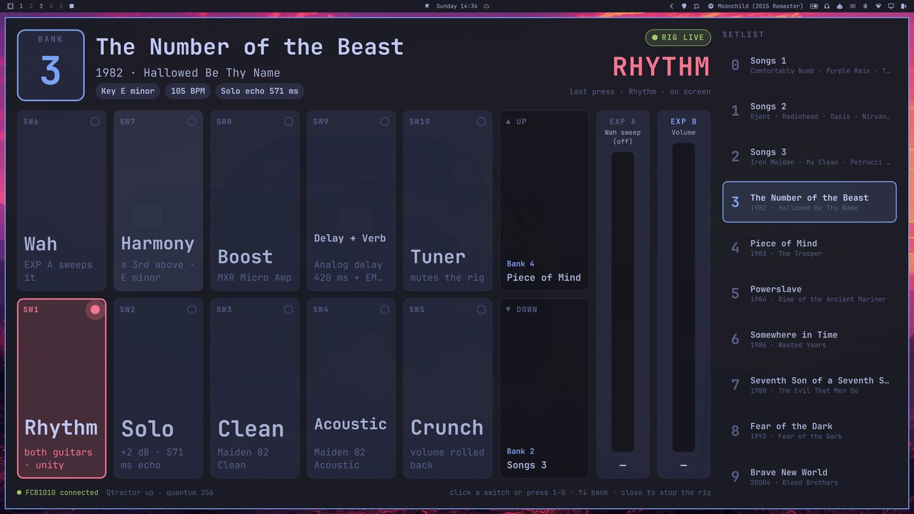
GuitarMood on my desktop, a real screenshot with the rig live: bank 3 (The Number of the Beast), RHYTHM lit, the song's key, tempo and solo echo up top, the setlist on the right, and Omarchy's wallpaper showing through.
That's GuitarMood. I open it from the Omarchy launcher and the whole rig starts: a DAW nobody clicks, three instances of a native amp-sim plugin, seven eras of Iron Maiden and fifteen other researched rigs. The window is my pedalboard, live. It shows which bank I'm on, what every switch does in that bank, what's on, and where the expression pedals are. Stomp a switch and it lights up. Click one and the rig switches as if I'd stomped it. SUPER+W closes it, and the rig saves and shuts down behind it. It tiles, it scales to whatever size Hyprland gives it, and it wears my Omarchy theme.
Every piece of software in it runs natively on Linux, and every piece is free and open source, down to the amp-sim plugin. The tones are free community captures. The whole thing is on GitHub for anyone.
Getting here took one very long weekend, five acts and five tuners:
- Leaving Wine: a native amp sim, a reverse-engineered preset format, fifteen research agents, silent IRs, latency measured instead of vibed, and a volume slider that had been stealing 24 dB.
- A DAW nobody clicks: Qtractor, generated by a script, and a compressor that ended a day of hand-levelling.
- Up the Irons: seven eras of Maiden on one floorboard, scenes that switch without a gap, and the second guitarist on a footswitch.
- Five tuners: and what a tuner listening to the wrong input does to your dropouts.
- GuitarMood: the rig as an Omarchy app.
Then what's free and open, what's next (a much lighter Omarchy plugin), and the practice guide, which is how I actually use it. If you're only here for the board, all ten banks are in the full pedal map. There are charts. Of course there are charts.
Act one · leaving Wine
10 ms on paper, mud in my hands
BIAS FX 2 is a Windows/macOS app, so on Linux it runs under Wine. And it did run! Presets loaded, the FCB1010 switched them, the tones sounded like my tones. The app even told me my latency was about 10 ms, which is perfectly playable.
It did not feel like 10 ms. It felt like playing through a swimming pool.
So I did what you do. Dropped PipeWire's quantum from 1024 to 128. Built WineASIO and registered it by hand at a fixed 128-sample buffer (Wine 11 doesn't ship a separate wine64 anymore, so even registering the driver was a side quest). Switched BIAS to its "Low" latency mode. Gave myself realtime privileges. Better. Still not tight enough to play comfortably.
The number in the app only covers the app's own buffer. Under Wine, the audio then goes through a WASAPI/ASIO shim, into a PulseAudio/JACK bridge, into PipeWire. Every layer brings its own buffering, and none of it shows up in that friendly "10 ms". Skill issue? Maybe. Architecture issue? Definitely.
Enter TONE3000
Then I found out TONE3000 had shipped a native Linux plugin.
If you haven't run into it: TONE3000 is a huge, free, community catalog of Neural Amp Modeler (NAM) captures. Somebody puts a real amp, pedal or full rig through a neural network until the model is basically the box, and uploads it. Next to those sit impulse responses (IRs) for cabinets, rooms, plates and springs. There are captures of a 1972 Hiwatt DR103. Of John Mayer's actual Two-Rock prototype. Of a Gallien-Krueger 2000CPL, the preamp in the rack Adrian Smith used on Seventh Son. All free to load, with a free account. The captures belong to the community that made them, shared under TONE3000's tone-sharing policy.
And now there's a native Linux player for all of it: a standalone app and a plugin, talking straight to JACK/PipeWire, no Wine anywhere. It's version 0.0.9, it's free, and, as I only found out while writing this post, it's open source: the plugin's code is on GitHub under the MIT license. I was not ready for how good it sounds.
The first chords through it at a 256-sample buffer felt better than BIAS FX under Wine at a nominal 128. That settled it: the rig was moving.
The whole rig: MIDI from the floor into TONE3000's ALSA sequencer port, audio through the Scarlett into PipeWire, where TONE3000 is just another JACK client.
No API? No problem. Again.
Same problem as last time, though. I did not want to click together fifteen presets and MIDI-learn every switch by hand. I wanted the rig as code. TONE3000 has no scripting API. What it has is files:
~/.config/TONE3000/Presets/<id>.t3kpreset: four magic bytes,T3KB, then a JUCE ValueTree in its binary form. Every block embeds the tone's catalog JSON and the raw.namor.wavbytes, so a preset is fully self-contained.Presets/order.json: a JSON array of preset ids. Program Change N loads the Nth entry. That's the entire PC mapping.TONE3000.settings: the standalone's XML settings. The interesting bit isfilterState, the plugin state in JUCE's own flavour of base64 (a little-endian bit stream whose alphabet starts with a dot, because of course it does). Inside it lives theMidiMappingstree.
JUCE ValueTrees are delightfully simple once you've seen one: a NUL-terminated type name, a count of properties, each one a name plus a typed value, then the children, recursively. The whole reader fits on a screen:
def read_tree(b, i):
j = b.index(0, i); name = b[i:j].decode(); i = j + 1 # type name, NUL-terminated
n, i = read_cint(b, i) # property count
props = {}
for _ in range(n):
j = b.index(0, i); k = b[i:j].decode(); i = j + 1
props[k], i = read_var(b, i) # typed var: int/bool/double/str/binary...
n, i = read_cint(b, i) # child count
kids = []
for _ in range(n):
c, i = read_tree(b, i) # and recurse
kids.append(c)
return Node(name, props, kids), i
def load_t3kb(data):
assert data[:4] == b"T3KB", "not a TONE3000 file"
node, end = read_tree(data, 4)
assert end == len(data)
return nodeRound-trip that, and you can build a preset from scratch that the app can't tell from one you clicked together.
Then the MIDI mapper. The stock FCB1010 sends CC value 127 on every press of a toggle switch. Some apps treat that as "on, on, on, on" and you can never turn anything off. Rather than guess, we disassembled MidiMapper::applyEvent in the TONE3000 binary. (Had I known the source was public, I'd have read that instead.) For toggle targets, any value ≥ 64 flips the state and anything ≤ 63 is ignored. So 127, 127, 127 means on, off, on. Verified live: CC 23 flipped the Slipknot preset's TS808 off, and the release message was ignored. The pedal didn't need reprogramming at all. On BIAS FX 2 those same CCs mean wah / octaver / delay / distortion / tuner; on TONE3000 they now mean gate / spread / boost / drive / echo.
One catch: TONE3000 maps CCs to block positions ("Block 2 power"), globally, not to specific pedals. So every preset has to share one slot layout, and the floorboard layout falls out of that:
TONE3000 maps CCs to block positions, so every preset shares one slot layout. Gold = switchable from the floor. This is the day-one layout; act two reshuffles the top row, see the full pedal map.
Now one script owns the whole thing. tone3000.py build downloads the captures, writes all fifteen presets in PC order and the MIDI map. tone3000.py configure sets up audio, MIDI, NAM calibration and the Linux side. bootstrap.sh does all of it on a fresh machine. Quit TONE3000 first, though: the standalone rewrites its settings on exit, and it will happily undo your work.
Fifteen research agents walk into a studio
This is where it got silly, in the best way.
My BIAS FX 2 presets were approximations built up over years of fiddling. TONE3000's catalog has captures of the actual gear. So why approximate?
With Claude Code I spun up fifteen research agents, one per song or band, all with the same brief: find the band's best-era record or live rig (who played what, through what, on which record), cite sources, search the TONE3000 catalog for captures of that exact gear, and write the preset as a JSON file, with notes on everything that had to be approximated. Presets are data now:
{
"pc": 10,
"name": "Iron Maiden",
"reference": "The Evil That Men Do — Seventh Son of a Seventh Son (1988, Musicland Munich, prod./eng. Martin Birch)",
"rig": "Dave Murray: Strat -> Gallien-Krueger 250ML-series preamp -> Marshall 4x12 (left). Adrian Smith: ...",
"sources": ["https://www.guitarworld.com/gw-archive/steve-harris-and-dave-murray-iron-maiden-open-1988-guitar-world-interview", "..."],
"notes": "1986-88 was Maiden's solid-state GK era for BOTH players ...",
"left": [
{ "role": "boost", "type": "nam", "tone_id": 87914, "model_id": 742716, "enabled": false, "label": "Boss SD-1 as clean boost" },
{ "role": "drive", "type": "nam", "tone_id": 35412, "model_id": 381302, "enabled": false, "label": "MXR Distortion+" },
{ "role": "amp", "type": "nam", "tone_id": 27127, "model_id": 379866, "label": "Gallien-Krueger 250ML (Murray)" },
{ "role": "cab", "type": "ir", "tone_id": 67526, "model_id": 463991, "label": "1987 Marshall 1960A G12T-75, MD421" },
{ "role": "echo", "type": "echo", "delay_ms": 373, "feedback": 0.3, "cutoff_hz": 5000, "mix": 0.22, "enabled": false },
...
],
"split_after": 2,
"right": [ ... GK 2000CPL (Smith), same cab with an SM57, same echo, 480L plate ... ],
"params": { "chainPanLeft": 0.0, "chainPanRight": 1.0, "alignWobbleEnabled": 1.0, "alignWobble": 0.3 }
}What came back was better than anything I'd have dialed in myself:
- Comfortably Numb: a real 1972 Hiwatt DR103 with its own Fane 4x12 as a full-rig capture, a Vick '73 Ram's Head Muff at sustain 7 (Gilmour didn't max it, the amp does part of the work), and an EMT 140 plate.
- Purple Rain: Prince's Mesa Mark IIB run crystal clean. The IIC+ conversion only came for the 1984 tour, and no IIB capture exists, so a real 1984 IIC+ "Silver Zephyr" clean channel stands in. A DS-1 for the solo, just like on the record.
- Tornado of Souls: Mustaine's JCM800 2203 at "every knob dimed" hard left, Marty Friedman's Bogner Triple Giant hard right.
- Dream Theater: Awake's quad-tracked wall. A Mark IIC+ with the GEQ in Petrucci's V on one side, a 90s Dual Rectifier on the other.
- Slipknot: Iowa-era Mick Thomson's VHT Pittbull into an IR billed as Thomson's Iowa Carvin cab, and Jim Root's 5150.
- Radiohead: split after slot 1, so the ShredMaster hits only Jonny's Fender Eighty-Five on the left while Ed's clean AC30 stays shimmery on the right.
- Iron Maiden: my favourite, because the agent overruled the internet. The common summary says Dave Murray = Marshall. The 1988 Guitar World interview and the gear histories say both guitarists moved to Gallien-Krueger for Somewhere in Time and Seventh Son. Solid-state GKs! On Seventh Son! So: a GK 250ML for Murray on the left, a GK 2000CPL (the preamp inside Smith's 2100SEL rack) on the right. I had no idea.
Plus Periphery (5150 and a Mark V in Mark IV mode), OK Computer, Morning Glory (Bluesbreaker + AC30, with Rockfield's live room as a Lexicon 480L wood room), Nevermind (DS-1 into a Mesa Studio Preamp, doubled with a Bassman), The Colour and the Shape, Mayer's Two-Rock, Petrucci's cleans, an acoustic simulator and a blackface Twin. Ten of the fifteen came back as dual-rig stereo, because that's how those records were made: two guitarists, or two amps, hard-panned.
Tricks I didn't know a capture player could do
TONE3000 is, on paper, "load a capture, load an IR". In practice it has just enough routing to get very creative:
A dual-rig preset (PC 10, Iron Maiden): shared pedals, a split, two amp/cab/echo/reverb chains panned hard left and right, and one footswitch driving both echoes.
- Dual stereo chains with a shared pedal split. Two full amp chains, and the split point is per preset. Pedals before it feed both rigs; everything after is per side, panned wherever you like.
- Align and Spread wobble as chorus. TONE3000 can't modulate anything. But Align (time alignment between the two rigs) and Spread (stereo widening) both have a wobble. A slow wobble between two rigs is close enough to the GK's built-in stereo chorus, a TC 2290 or a Small Clone to make me smile.
- Generated BBD echo IRs. There's no delay block either. But a delay with a fixed time is just an impulse response, so the builder synthesizes one, Boss DM-2 style:
def analog_echo(delay_ms=300.0, feedback=0.6, repeats=8, cutoff_hz=2800.0, rate=48000):
"""Wet-only IR of an analog (BBD) delay like a Boss DM-2: each repeat passes the
bucket-brigade's low-pass again, so the echoes darken as they decay."""- Catalog reverb IRs. An EMT 140 plate emulation of the one at Sunset Sound (where Purple Rain was mixed), a Lexicon 480L plate for Martin Birch's desk plate, a 480L wood room for Rockfield, the Fender Twin's own spring tank, and an MIT-measured hotel ballroom standing in for St Catherine's Court.
- NAM input calibration. The Scarlett's instrument input clips at +12.5 dBu with the gain knob at minimum. Tell NAM that, and each capture gets hit at the level the original amp saw.
- Per-block pre-EQ that turns humbuckers into single coils. My JP70 has humbuckers; plenty of these records were made with single coils. Six bands of EQ before the amp model (
[-3, -2.5, 0, 1.5, 3, 2]dB at 100 Hz / 250 / 650 / 1.6k / 3.5k / 8k) trim the mud and add the glass. - One CC, two targets. On the day-one board, SW10 toggled the echo on both sides of a dual rig at once. We mapped CC 24 to two targets, sent one CC, and read back the saved state: both flipped, and the app kept both mappings. (Act two takes this further: LEAD is one CC on three targets, the boost plus both echoes. And SW10 ends up as the tuner.)
The gallery: every stack
Here's every preset as TONE3000 draws it, loaded by sending a program change into the app. The chain scrolls off to the right in the app, so the echo and reverb IRs mostly live just out of frame. Open "the chain" under any screenshot for every block, a link to download each capture from TONE3000, and the notes on what's a stand-in. Everything is generated from the rig JSON files; the full write-up with sources is in RIGS.md. The notes are the research agents' own, since brought in line with the final board: the echo toggles together with the boost on SW8 (LEAD), and SW10 is the tuner (full pedal map).
- PC 0 · Comfortably Numb
- PC 1 · Purple Rain
- PC 2 · Tornado of Souls
- PC 3 · Dream Theater
- PC 4 · Slipknot
- PC 5 · Djent
- PC 6 · Radiohead
- PC 7 · Oasis
- PC 8 · Nirvana
- PC 9 · Foo Fighters
- PC 10 · Iron Maiden
- PC 11 · My Clean
- PC 12 · Petrucci Clean
- PC 13 · Acoustic
- PC 14 · Glassy Clean
PC 0 Comfortably Numb single rig
Comfortably Numb solos: The Wall (1979), live on Delicate Sound of Thunder (1988) and PULSE (1994)
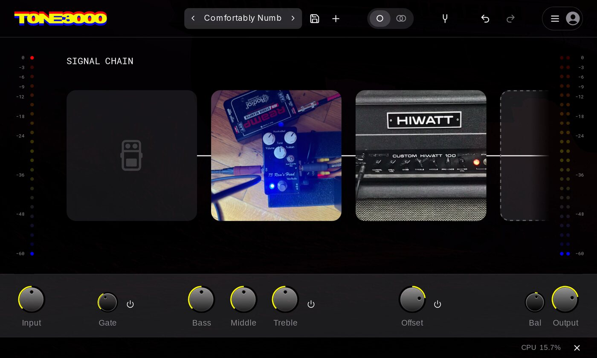
The chain, the captures, and what's approximated
Original rig: Black Strat (DiMarzio FS-1 bridge) -> MXR Dyna Comp -> Big Muff (Ram's Head c.1974 on The Wall, Sovtek 'Civil War' on PULSE) + Chandler/BK Butler Tube Driver -> Hiwatt DR103 (linked inputs, Normal 7 / Brill 4.5, B6 M4 T5 P6, master 5) into WEM Starfinder 4x12 w/ Fane Crescendos, split to Yamaha RA-200 rotary (Doppola live) -> MXR DDL / TC 2290 delay (~440-500 ms, 3-4 repeats) -> studio plate / Lexicon reverb
L1boost Tube Driver Butler Boost & Drive 400EP BK Butler Tube Driver, clean boost setting (stand-in for Tube Driver #1 / Colorsound Powerboost) offL2drive Vick Audio 73 Rams Head Vick Audio '73 Ram's Head Big Muff, vol 7 sustain 7 tone 5 onL3amp HiWatt DR103 + Fane speakers + SM57 (full rig) 1972 Hiwatt DR103 + its Fane 4x12, linked inputs clean, SM57 (full rig) onL5echo MXR DDL / TC 2290 solo delay, 460 ms, 3-4 repeats (generated 460 ms BBD-style echo IR · mix 28%) offL6ambience VH Reverb EMT 140 plate (Sunset Sound), wet 25% · mix 25% on
Notes: Single rig: real 1972 Hiwatt DR103 + its Fane-loaded 4x12 full rig (linked inputs, clean, like Gilmour's) stands in for the DR103 into WEM Starfinder/Fane Crescendo stacks. The Yamaha RA-200 (studio) / Doppola (live) rotary split can't be captured: both Leslie captures in the catalog (37391, 38834) fail to resolve (null model URLs) and NAM can't rotate anyway, so Spread + wobble 0.4 fakes the rotor movement. Muff is the Vick '73 Ram's Head clone at sustain ~7 / tone 5 (Gilmour ran ~6/6, not maxed; the amp does part of the work); Ram's Head chosen over Sovtek because the only Sovtek capture is maxed and not reamped. No Colorsound Powerboost capture exists: the boost slot is the BK Butler Tube Driver clean-boost setting (Tube Driver #1 on the PULSE board). Electric Mistress/CE2 chorus, MXR Dyna Comp and James Guthrie's heavy studio compression are not modeled. Echo (SW8 (LEAD), off by default): 460 ms, ~4 audible repeats, brighter cutoff for a digital MXR DDL / TC 2290; switch it on for the solos.
rigs/00-comfortably-numb.json · sources: 1 · 2 · 3 · 4 · 5 · 6
PC 1 Purple Rain single rig
Purple Rain (1984) — title track, recorded live at First Avenue 3 Aug 1983, overdubs/mix at Sunset Sound
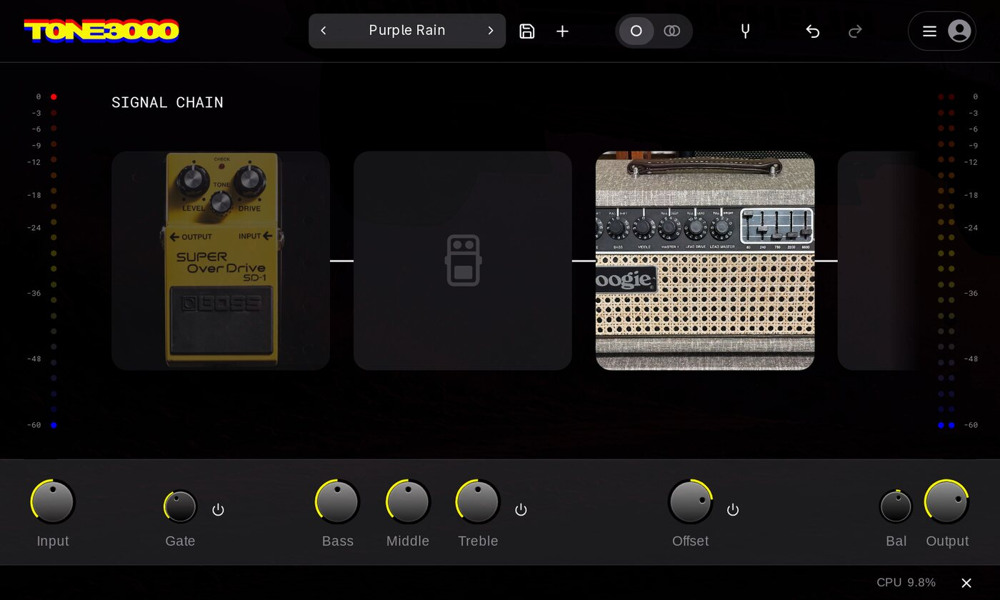
The chain, the captures, and what's approximated
Original rig: Hohner MadCat (single coils) -> Boss SD-1 (low-gain boost) / DS-1 (solo) / DM-2, CE-2 chorus -> Mesa/Boogie Mark IIB set crystal-clean (1981 heads; converted to IIC+ spec only for the 1984 tour) -> Bag End sealed cabs with JBL D120F 12s; Sunset Sound EMT plate at mix
L1boost Boss SD-1 Super Overdrive Boss SD-1, level 6 / drive 0 (low-gain boost) offL2drive Boss DS-1 Distortion Pack Boss DS-1, tone 4 / dist 8 (solo) offL3amp "Silver Zephyr" | 1984 Factory Mesa Boogie Mark IIC+ (DRG, 105PT) | Community Pack 1984 Mesa Mark IIC+ Silver Zephyr, Dynamic Airy Clean (DI) -- stands in for clean Mark IIB pre-EQ: humbucker → single coil onL4cab 1976 Deluxe Reverb Cabinet with JBL E120-8 JBL E120 12" (for Bag End JBL D120F), SM57 cap edge onL5echo Boss DM-2 style, 300 ms (generated 300 ms BBD-style echo IR · mix 35%) offL6ambience VH Reverb EMT 140 plate, Sunset Sound · mix 30% on
Notes: Aug 1983 First Avenue take used Prince's Mark IIB heads run clean (IIC+ conversion came at the 1984 tour rehearsals). No Mark IIB capture exists: a real 1984 IIC+ (Silver Zephyr) clean model stands in -- the Mark II clean/rhythm channel is near-identical across A/B/C+; the only true pre-C+ capture (24644, 1979 Mark IIA) is a crunch-only DI, too dirty for the clean intro. Amp switched from 'Airy Edge' to 'Airy Clean' to match the documented crystal-clean setting; dirt comes from the DS-1 (SW9) for the solo, as Prince did. Cab: Bag End sealed 4x12 with JBL D120F; no raw D120F IR in the catalog (the Twin D120 IRs are pre-EQ'd), so a JBL E120 (same-family cone, open-back 1x12) SM57 cap-edge IR is used -- expect slightly less low-end thump than a sealed 4x12. CE-2 is time-varying, so Spread wobble approximates it. DM-2 echo is generated (no DM-2 IR exists). Plate IR is a DAW emulation of the Sunset Sound EMT 140, not a sample of the real plate. DS-1 settings for the solo are undocumented; T4/D8 gives a warm, sustaining lead into a clean amp. Humbucker->single-coil pre-EQ on the amp assumes a humbucker guitar (JP70).
rigs/01-purple-rain.json · sources: 1 · 2 · 3 · 4 · 5 · 6 · 7
PC 2 Tornado of Souls dual-rig stereo
Tornado of Souls (incl. Marty Friedman's solo) — Megadeth, Rust in Peace (1990, Rumbo Recorders; prod. Mike Clink then Dave Mustaine/eng. Micajah Ryan, mixed dry by Max Norman)
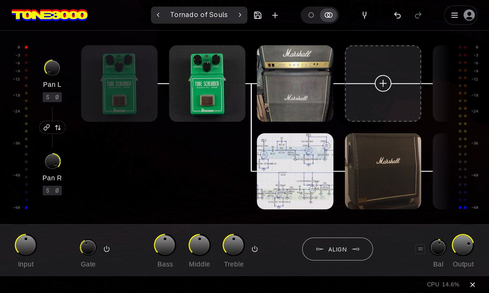
The chain, the captures, and what's approximated
Original rig: Dave Mustaine: Jackson King V (Seymour Duncan JB) -> Marshall JCM800 2203 heads 'every knob dimed' -> Marshall 4x12s w/ Celestion G12T-75 (left). Marty Friedman: Jackson -> Bogner (Hafler) Triple Giant tube preamp -> VHT/tube power amp -> Marshall/Bogner 4x12 (right). VHT amps and Bogner preamps were in the room; Mustaine: 'It was Marshall stuff... I've always been a Marshall guy.' Dry Max Norman mix, solos with light delay
L1boost BOOST PEDAL PACK Boss SD-1 Super Overdrive, boost setting (solo push) offL2drive BOOST PEDAL PACK Ibanez TS808, boost setting (drive low, level up) tightener onL3amp Marshall JCM800 2203 | 4x12 Marshall Marshall JCM800 2203 + Marshall 4x12, SM57, HI GAIN (pre 10, B4 M8 T7 P7) (Mustaine) onL5echo Rack solo delay, ~1/4 note @150 BPM (generated 400 ms BBD-style echo IR · mix 18%) offR1amp Bogner/Hafler Triple Giant & Bogner Fish (LiveSPICE2NAM) Bogner/Hafler Triple Giant preamp, Sharp ch., flat knobs (Friedman) onR2cab Marshall JCM800 Lead 1960 A (1987, Celestion T75, multi mics) 1987 Marshall 1960A G12T-75, SM57 edge of cone (Friedman) onR3echo Rack solo delay, ~1/4 note @150 BPM (generated 400 ms BBD-style echo IR · mix 18%) off
Slots L1–L2 feed both rigs; the left and right chains are panned apart.
Notes: Dual-rig stereo: Mustaine's JCM800 hard left, Friedman's Bogner Triple Giant hard right, both fed by the shared SD-1/TS808 slots. Left = real JCM800 2203 + Marshall 4x12 full-rig capture at the 'HI GAIN' setting (preamp 10, mid 8, treble 7, presence 7) to match Mustaine's 'dimed' 800. Right = Triple Giant Sharp channel, a LiveSPICE circuit-sim preamp capture with flat controls (no real Triple Giant capture exists), sent straight into a 1987 Marshall 1960A G12T-75 IR, i.e. the VHT/clean tube power amp stage is not modelled; small post-EQ tames the flat-knob fizz. The Triple Giant attribution comes from Equipboard; sources conflict (Mustaine says Marshalls, some credit CAE 3+/VHT 2150 which is more the Countdown era; alternative right amp: 'Fig Deth Marty Chug' CAE3+/VHT capture, tone 6144 / model 429759). TS808 (boost setting) left on as the tight front end that 1990 thrash 800s used; it is a guess, turn SW9 off for the rawer amp-only tone. The Tornado solo is Marty through both sides here rather than centred. Echo (SW8 (LEAD)) = ~1/4 note at ~150 BPM, low mix, dark-ish repeats for the solos. No reverb: Max Norman's mix is famously dry. Relative level of the two sides is untested; trim with the rig EQs if one side dominates.
rigs/02-tornado-of-souls.json · sources: 1 · 2 · 3 · 4 · 5 · 6 · 7 · 8 · 9
PC 3 Dream Theater dual-rig stereo
6:00 / Caught in a Web / Lie / Erotomania — Awake (1994); also covers the IIC+-voiced Images and Words (1992: Pull Me Under, Take the Time)
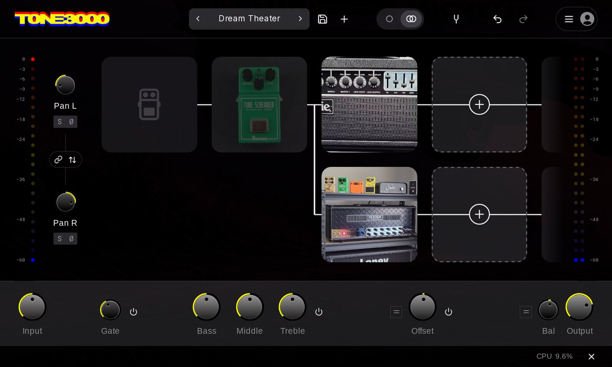
The chain, the captures, and what's approximated
Original rig: John Petrucci: Ibanez JPM / Music Man-style humbuckers (DiMarzio Steve's Special bridge) -> Mesa/Boogie Mark IIC+ (lead ch, GEQ in a V) AND Mesa Dual Rectifier, rhythms quad-tracked (2x IIC+ L/R + 2x Recto L/R) -> Mesa Rectifier Standard 4x12 V30; rack: TC Electronic 2290 (delay/chorus), Lexicon PCM70 reverb. Images and Words was Mesa TriAxis/2:90 (or Quad preamp, both IIC+-lineage) into Mesa 4x12, JC-120 for cleans
L1boost Klon Centaur (Silver) Klon Centaur (silver), low gain: solo volume lift (not on record) offL2drive BOOST PEDAL PACK Ibanez TS808, boost setting (gain low, level up): Mark-amp lead push (not on record) offL3amp Mark IIC+ (High Gain) Mesa Mark IIC+ lead: V1 6.35 T7.5 B0 M8, lead drive 6, GEQ V (80/45/20/50/80%), Mesa 2x12 V30, SM57+C414 onL5echo TC 2290-style digital lead delay ~420 ms (generated 420 ms BBD-style echo IR · mix 22%) offL6ambience Lexicon PCM90 Lexicon PCM90 INSTR Rich Plate (stands in for PCM70), low mix · mix 14% onR1amp Mesa 90s Dual Rectifier RI - Red Modern FULL RIG Mesa 90s Dual Rectifier RI, Red ch Modern, Bold, diode (unboosted), V30 4x12, SM57+e906 onR3echo TC 2290-style digital lead delay ~420 ms (generated 420 ms BBD-style echo IR · mix 22%) offR4ambience Lexicon PCM90 Lexicon PCM90 INSTR Rich Plate (stands in for PCM70), low mix · mix 14% on
Slots L1–L2 feed both rigs; the left and right chains are panned apart.
Notes: Dual-rig stereo for Awake's quad-tracked wall: left = real Mark IIC+ full rig at classic Petrucci settings (bass 0, mid 8, treble 7.5, all pulls, GEQ V 80/45/20/50/80), right = 90s Dual Rectifier (reissue) Red/Modern full rig into a V30 4x12. Pans are 0.15/0.85 rather than hard, because on the record each amp was tracked both left and right. The IIC+ capture was miked on a Mesa 2x12 V30 (not the 4x12 Recto cab), so it's a little tighter than the record. Images and Words' exact amp (TriAxis/2:90 vs Quad vs IIC+) is disputed; all are IIC+ voicings, so the left rig stands in for it; its lone-IIC+ sound is the left rig alone (not separately switchable). TC 2290 chorus can't be modelled: SW7 spread with light wobble plus a slow align wobble stand in for it. Echo (SW8 (LEAD)) = TC 2290-style bright digital lead delay. PCM70 isn't in the catalog: PCM90 (its successor) Rich Plate at a low mix instead. Boost/drive pedals weren't on these records; they're lead pushes (Klon clean lift, TS808 tightener), both off.
PC 4 Slipknot dual-rig stereo
Iowa (2001), e.g. People = Shit / Disasterpiece / Left Behind; produced by Ross Robinson, drop-B
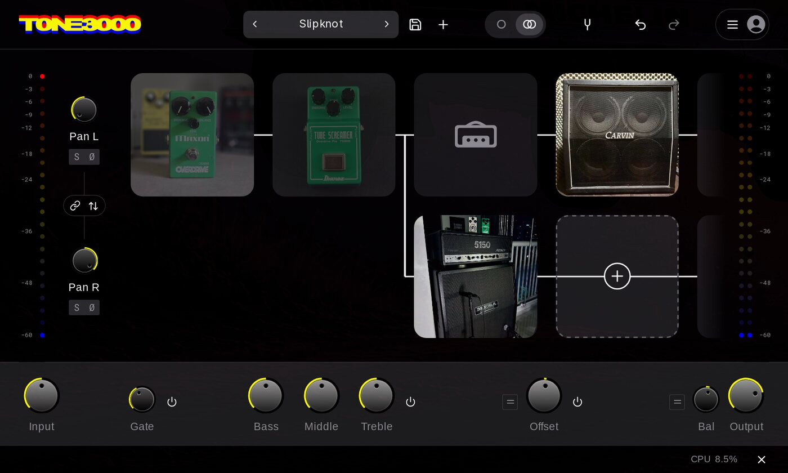
The chain, the captures, and what's approximated
Original rig: Both players tracked with Mick's BC Rich (EMG 81, drop B). L = Mick Thomson: VHT Pittbull Ultra Lead -> Carvin 4x12 (Eminence Carvin British BR100). R = Jim Root: Peavey 5150 (split with an old Laney) -> 4x12. No always-on pedals documented; Ross Robinson kept it dry.
L1boost Maxon OD808 Boost Maxon OD808, clean boost (drive min, level max, tone 1 o'clock), for solos offL2drive BOOST PEDAL PACK Boss SD-1 Super OD, tight boost (optional, not on the record) offL3amp VHT ULTRALEAD CH3 HEAD NO CAB Mick: VHT Pittbull 100 Ultra Lead, ch3, line-out DI onL4cab Slipknot - Iowa (IR) (Mick Thomson) Mick: Carvin 4x12, Eminence Carvin British 100 (Iowa cab) onL5echo Analog solo delay 380 ms (off) (generated 380 ms BBD-style echo IR · mix 20%) offR1amp Full Rig Peavey 5150 + Mesa 4x12 Jim: Peavey 5150 red ch, no boost, Mesa OS 4x12 V30, SM57 (full rig) onR3echo Analog solo delay 380 ms (off) (generated 380 ms BBD-style echo IR · mix 20%) off
Slots L1–L2 feed both rigs; the left and right chains are panned apart.
Notes: Two guitarists hard-panned, so this is a dual rig: split after the pedals, L = Mick's VHT, R = Jim's 5150. Mick: a real VHT Pitbull 100UL, ch3 (the lead channel), captured from its line out, into a TONE3000 IR described as Mick's Iowa Carvin 4x12 with British 100 speakers. Jim: a popular unboosted 5150 red-channel full rig into a Mesa OS 4x12 with V30s. His old Laney (a Pro Tube Lead per Guitar World, Aug 2001) is not modelled. A ProTube Lead capture exists (tone 39842), but a chain can hold only one amp, so the right side uses the 5150. Guitar World says Jim used a 5150 plus the Laney; one Equipboard user says he used a Rivera Knucklehead on the back half of Iowa. I went with the 5150. The self-titled album (1999) used different gear: Mick had a Rocktron Piranha preamp into a Mesa 295 power amp, and Jim had Mesa DC-10 heads. Iowa was chosen as the reference era. No boosts are documented, so both are off. SW8 = Maxon OD808 clean boost for solos. SW9 = SD-1 tight boost if you want a more modern chug. The Iowa guitars are dry, so there is no ambience. Whammy and Rotovibe can't be modelled.
PC 5 Djent dual-rig stereo
Periphery (2010) / Periphery II: This Time It's Personal (2012) rhythm tones, with Meshuggah obZen (2008) tightness; quad-tracked rhythms hard-panned L/R
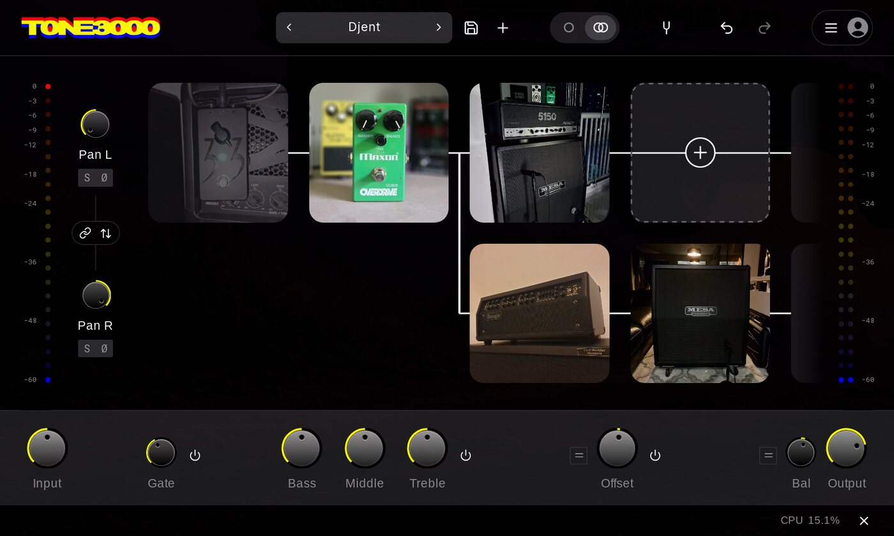
The chain, the captures, and what's approximated
Original rig: Ernie Ball JP7 / Blackmachine B6 (DiMarzio humbuckers) -> Maxon OD808 at zero drive (Fortin 33 on Meshuggah side) -> Axe-FX Ultra 'FAS Modern' (P1) / Axe-FX II preamp into a Peavey 5150 power section (P2) -> mic'd Mesa 4x12 V30; tight gate, dry rhythms, quad-tracked with contrasting amp voicings
L1boost Fortin 33 Fortin 33 (Thordendal sig) boost, 50% offL2drive Maxon OD808 Boost Maxon OD808, drive min / balance max / tone 1 o'clock onL3amp Full Rig Peavey 5150 + Mesa 4x12 Peavey 5150 lead ch (no boost) + Mesa OS 4x12 V30, SM57 (full rig) onL5echo Lead delay, 400 ms (generated 400 ms BBD-style echo IR · mix 25%) offR1amp Mesa Boogie - Mark V [18dBu] Mesa Mark V ch3 MK-IV mode, high gain balanced (DI) onR2cab Mesa OS 4x12 V30 - SM57-SM58-AT2020-Stereo Room Mesa Oversized 4x12 V30, SM57 top-left onR3echo Lead delay, 400 ms (generated 400 ms BBD-style echo IR · mix 25%) off
Slots L1–L2 feed both rigs; the left and right chains are panned apart.
Notes: Periphery's records are Axe-FX amp models, so real-amp captures stand in: the 5150 side matches P2 (5150 power amp + Mesa 4x12), and a Mark V in Mark IV mode is the classic contrasting djent voice for the other pair of tracks. Both sides use the same Mesa Oversized V30 / SM57 cab (the L capture was taken with it; the R side gets the same author's IR). The OD808 is a separate zero-drive capture in front of both amps (SW9) rather than baked in, so it can be toggled. The Fortin 33 (Thordendal signature, 50%) sits on SW8 as the Meshuggah-flavoured extra tightener; the real obZen chain (Fortin 33 -> Dual Rectifier Rev D per Toontrack) isn't reproduced amp-wise. Quad-tracking is approximated by two rigs panned hard L/R with Align on but no wobble (keeps it tight). Rhythms are dry, so there's no ambience; the echo is only for leads. Gate comes from the global setting (djent wants it tight).
PC 6 Radiohead dual-rig stereo
The Bends (1995) / OK Computer (1997), prod. John Leckie / Nigel Godrich: Just, My Iron Lung, Airbag, Paranoid Android, Let Down
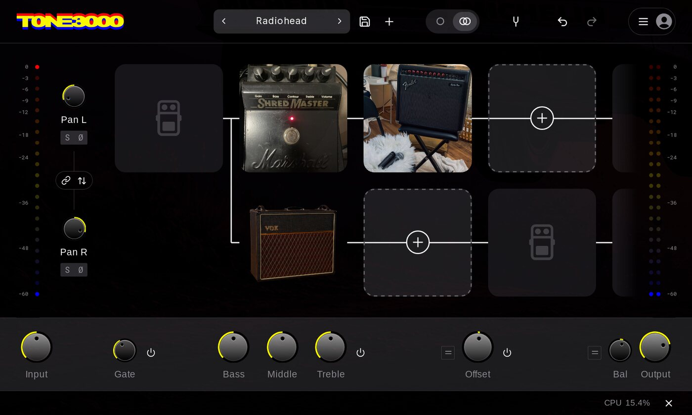
The chain, the captures, and what's approximated
Original rig: Jonny Greenwood: Fender Telecaster Plus (Lace Sensors) -> Marshall ShredMaster (gain 3 o'clock, contour min) -> Roland RE-201 Space Echo -> 1987 Fender Eighty-Five (clean ch., T4 M4 B4), Vox AC30 for cleans on OKC (left). Ed O'Brien: Rickenbacker/Strat -> MXR phaser, Korg A2, Boss DD-5 delay -> Vox AC30 Top Boost clean (right). OKC tracked at St Catherine's Court (ballroom/hall natural ambience)
L1boost TC Electronic Spark Booster (Clean Boost Mode) TC Spark Booster clean, gain 2 level 10 (Demeter Tremulator +6 dB stand-in) offL2drive Marshall Shredmaster Original Marshall ShredMaster (Jonny only) gain 10 bass 7 contour 0 treble 7 onL3amp Fender Eighty-Five 1987 1987 Fender Eighty-Five full rig, clean T4 M4 B4 (OKC), SM57 (Jonny) onL5echo Roland RE-201 Space Echo (Jonny) 360 ms tape (generated 360 ms BBD-style echo IR · mix 30%) offL6ambience MIT Room and Space Impulse Response pack MIT hotel ballroom room IR (St Catherine's Court ballroom stand-in) · mix 12% onR1amp VOX AC30 TB6 1994 SPEAKERS CELESTION 2X12 1994 Vox AC30 TB6 full rig, clean, Alnico Silver 2x12, R121+U87 (Ed) onR3echo Boss DD-5 lead delay (Ed) 550 ms, dotted 8th @ 82 bpm (generated 550 ms BBD-style echo IR · mix 30%) offR4ambience Boss DD-5 always-on ambient wash (Ed) 440 ms (generated 440 ms BBD-style echo IR · mix 15%) onR5ambience MIT Room and Space Impulse Response pack MIT hotel ballroom room IR (St Catherine's Court ballroom stand-in) · mix 25% on
Slots L1 feed both rigs; the left and right chains are panned apart.
Notes: Dual-rig stereo split after slot 1 so the ShredMaster (SW9, on) hits only Jonny's Eighty-Five on the left; Ed's AC30 on the right stays clean and ambient, as on Airbag/Paranoid Android/Just. SW9 off = Jonny's side goes to the clean Eighty-Five (on OKC his cleans were really an AC30 TB, so it is brighter/stiffer than the record). ShredMaster capture 'Drive' (G10 B7 C0 T7) is close to Jonny's documented G 3 o'clock / contour min / B,T 2 o'clock. Eighty-Five capture uses his OKC settings T4M4B4. Boost = TC Spark clean boost as a stand-in for Jonny's Demeter Tremulator +6 dB (no capture). Ed's AC30 is a 1994 AC30 TB6 reissue (period-correct Korg-era) on Alnico Silvers, clean. SW8 (LEAD) echo: left = Jonny's RE-201 slap/tape (dark), right = Ed's DD-5 lead delay (~dotted 8th at 82 bpm); Ed also has an always-on subtle DD-5 wash in R4. Ambience = MIT measured hotel ballroom IR (stand-in for St Catherine's Court ballroom), wetter on Ed's side. Not possible: Whammy WH-1 octave (My Iron Lung), Mutronics Mutator, MXR phaser, Korg A2, tremolo; Align wobble gives only a light inter-rig shimmer.
PC 7 Oasis dual-rig stereo
(What's the Story) Morning Glory? (1995, Rockfield) and Definitely Maybe (1994), prod. Owen Morris & Noel Gallagher: Some Might Say, Morning Glory, Don't Look Back in Anger, Rock 'n' Roll Star
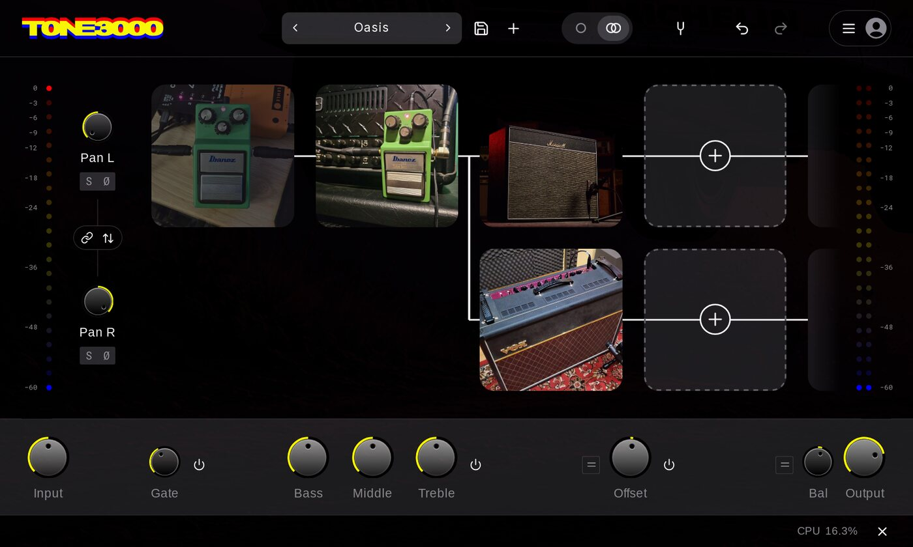
The chain, the captures, and what's approximated
Original rig: Noel: Epiphone Riviera / Gibson Les Paul -> (TS9 / SIB Echodrive for extra gain, Space Echo RE-201 then Boss DD-3 for delay) -> cranked Marshall Bluesbreaker combo + early-60s Vox AC30 (plus Orange OR120 / WEM Dominator / Marshall Valvestate 8080 on DM), each miked SM57 + Neumann U87, 3-5 overdubbed electric parts per song, heavily compressed mix
L1boost Ibanez TS9 Tube Screamer Ibanez TS9 D0 T6 L10 clean push, solos offL2drive Ibanez TS9 Tube Screamer Ibanez TS9 Drive 2 Tone 7 Level 10 (always-on push) onL3amp 1966 Marshall 1962 Bluesbreaker (JTM45) with G12 Alnico - CRUNCH - A2 1966 Marshall 1962 Bluesbreaker/JTM45 crunch, G12 Alnico 2x12, R121/R160/U87 (L) onL5echo Roland RE-201 Space Echo / Boss DD-3 solo delay, ~360 ms (generated 360 ms BBD-style echo IR · mix 25%) offL6ambience Lexicon 480L Altiverb Lexicon 480L Large Wood Room (Rockfield live room) · mix 12% onR1amp VOX AC30 TOP BOOST Greenback Vox AC30 Top Boost, Hi input full gain, TC5, master 4, Greenback 2x12, SM57 (R) onR3echo Roland RE-201 Space Echo / Boss DD-3 solo delay, ~360 ms (generated 360 ms BBD-style echo IR · mix 25%) offR4ambience Lexicon 480L Altiverb Lexicon 480L Large Wood Room (Rockfield live room) · mix 12% on
Slots L1–L2 feed both rigs; the left and right chains are panned apart.
Notes: Dual-rig stereo for the multi-tracked wall: Marshall Bluesbreaker (JTM45/1962 combo capture, U87-inclusive mic blend) hard left, cranked Vox AC30 Top Boost (own Greenback 2x12, SM57) hard right; pedals before the split feed both. Noel's gain came mostly from cranked amps; the TS9 at low drive/full level is left on to bring these captures up to his saturated rhythm level (stand-in for the SIB Echodrive he used as preamp gain). Align wobble loosens the two sides like separate overdubs. Orange OR120, WEM Dominator and Valvestate 8080 layers not modelled (NAM budget). Owen Morris's heavy bus compression, Riviera vs Les Paul voicing, and wah on solos are not reproduced. Echo = Space Echo/DD-3 solo delay; Rockfield live room approximated with a Lexicon 480L wood room.
PC 8 Nirvana dual-rig stereo
Smells Like Teen Spirit / Breed / In Bloom — Nevermind (1991), prod. Butch Vig, mixed by Andy Wallace, Sound City
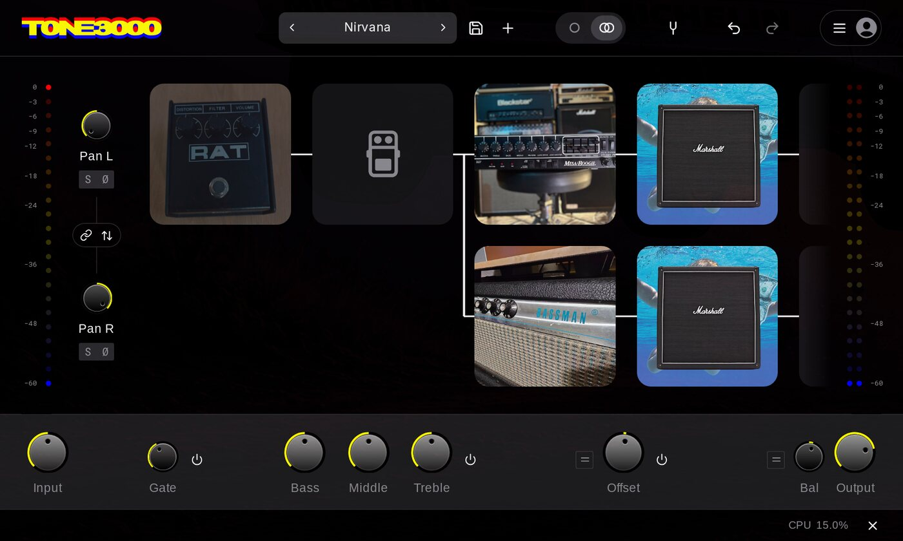
The chain, the captures, and what's approximated
Original rig: Kurt Cobain: '69 Fender Competition Mustang / '65 Jaguar (DiMarzio Super Distortion) -> Boss DS-1 (tone ~10 o'clock, level max) [+ ProCo RAT, EHX Small Clone] -> Mesa/Boogie Studio Preamp -> Crown Power Base 2 -> 4x12, double-tracked with a Fender Bassman on the heavy parts (AC30 for cleans); SM57/U87/414 close, very little room
L1boost ProCo RAT 2 ProCo RAT 2 low (D3 F5 L6), stacks on DS-1 offL2drive Boss DS-1 Distortion Pack Boss DS-1, tone 4 dist 7 (Kurt's Nevermind DS-1) onL3amp Mesa/Boogie Studio Preamp (Clean/Crunch) Mesa/Boogie Studio Preamp rhythm ch, heavy edge V9 bright off (preamp only) onL4cab Nirvana - Nevermind IRs Nevermind 4x12 IR (Celestion T75 blend), DIST 1 onL5echo Solo echo (not on record) (generated 320 ms BBD-style echo IR · mix 20%) offR1amp 1971 Fender Bassman 1971 Fender Bassman normal ch, sweet spot V7 T8 B5 onR2cab Nirvana - Nevermind IRs Nevermind 4x12 IR (T75/V30/Greenback blend), DIST 4 onR3echo Solo echo (not on record) (generated 320 ms BBD-style echo IR · mix 20%) off
Slots L1–L2 feed both rigs; the left and right chains are panned apart.
Notes: Dual-rig stereo for Vig's double-tracked rhythms: DS-1 (always on) feeds both; left = Mesa Studio Preamp (preamp-only capture, the Crown SS power amp assumed clean) + Nevermind-matched T75 4x12 IR, right = '71 Bassman DI at a pedal-platform setting + a second Nevermind IR, hard-panned. Exact Bassman year and Kurt's preamp settings are unknown (guesses). Small Clone can't be modelled: SW7 (spread) is preset with wobble as a stand-in for the watery verse/Come As You Are chorus. No reverb: Vig kept the guitars dry and in your face. Echo is only a solo helper (not on the record). SW8 = RAT stacked for extra saturation. The DS-1 (SW9) is Kurt's quiet-verse/loud-chorus switch: toggling it off drops ~5 dB by design.
rigs/08-nirvana.json · sources: 1 · 2 · 3 · 4
PC 9 Foo Fighters dual-rig stereo
Everlong / Monkey Wrench / My Hero — The Colour and the Shape (1997, prod. Gil Norton, Grandmaster Recorders)
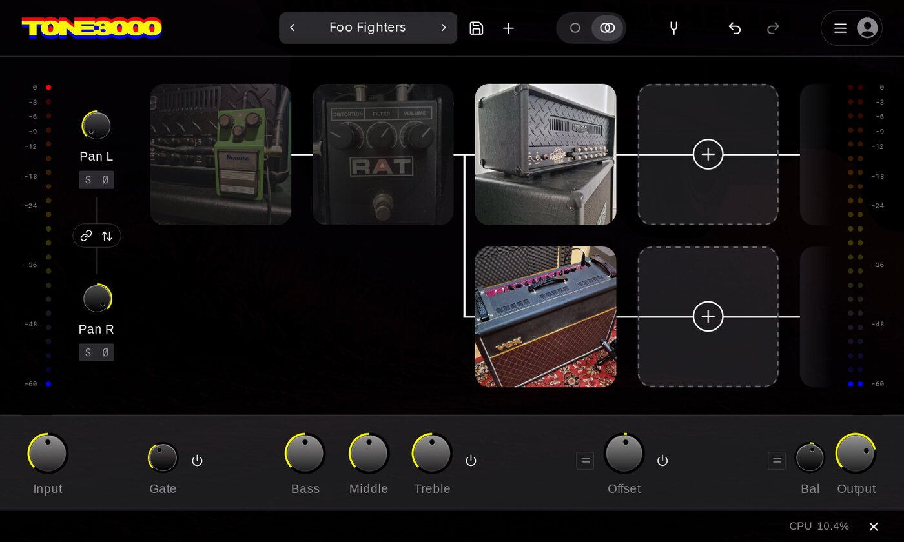
The chain, the captures, and what's approximated
Original rig: Dave Grohl: Gibson Trini Lopez / Les Paul (humbuckers, drop D) -> (Tube Screamer / ProCo Rat for extra push) -> Mesa/Boogie Dual Rectifier (heavy parts, Mesa 4x12) layered with Vox AC30 Top Boost; guitars stacked/double-tracked by Gil Norton, fairly dry studio ambience
L1boost Ibanez TS9 Tube Screamer Ibanez TS9 Tube Screamer, Drive 0 Tone 7 Level 7 (clean boost) offL2drive Proco Rat 2 1996 USA ProCo Rat 2 (1996 USA, LM308), crunch: Dist 2.8 Filter 4 offL3amp Mesa Boogie Dual Rectifier Revision G Mesa Dual Rectifier rev G, Red ch Vintage/Bold/diode (Molten Red) -> Mesa 4x12 OS, SM57 onL5echo Analog lead delay 380 ms, light (generated 380 ms BBD-style echo IR · mix 20%) offL6ambience Lexicon PCM90 Lexicon PCM90 'gen ambi' studio ambience, low mix · mix 12% onR1amp VOX AC30 TOP BOOST Greenback Vox AC30 Top Boost, Hi input full gain, Tone Cut 5, Master 4 -> 2x12 Greenback, SM57 onR3echo Analog lead delay 380 ms, light (generated 380 ms BBD-style echo IR · mix 20%) offR4ambience Lexicon PCM90 Lexicon PCM90 'gen ambi' studio ambience, low mix · mix 12% on
Slots L1–L2 feed both rigs; the left and right chains are panned apart.
Notes: Dual-rig stereo: L = early-'90s Dual Rectifier (rev G, era-correct two-channel) Red channel Vintage mode through a real Mesa 4x12 (SM57); R = Vox AC30 Top Boost full gain on Greenbacks (SM57), approximating the Rectifier+AC30 layering and Norton's double-tracked walls. Grohl (Guitar One, 1999) confirms the Dual/Triple Rectifier sound dominated TCATS; AC30 is documented for clean parts and the ~1997-2000 live rig, so using it as the dirty R double is an informed guess. Pedals on the record are undocumented: TS9 (boost, SW8) and a 1996 LM308 Rat 2 (drive, SW9) are off by default and feed both rigs. Norton's mixes are dry, so only a light PCM90 ambience; echo is a generic lead delay (little delay on the album). Small align wobble stands in for the slight movement between double-tracked takes.
PC 10 Iron Maiden dual-rig stereo
The Evil That Men Do — Seventh Son of a Seventh Son (1988, Musicland Munich, prod./eng. Martin Birch): rhythms, twin harmony leads, Smith's solo
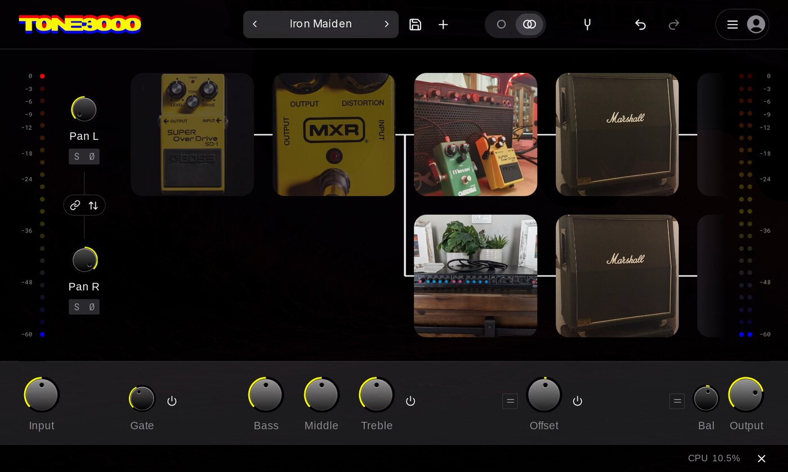
The chain, the captures, and what's approximated
Original rig: Dave Murray: Fender/ESP Strat -> Gallien-Krueger 250ML-series preamp -> Marshall 4x12 (left). Adrian Smith: Jackson Strat -> MXR -> rack Gallien-Krueger (2000CPL/2100SEL 'new model') + TC 2290 / Lexicon delay, GK stereo chorus -> Marshall 4x12 (right). Both switched from Marshall heads to GK for Somewhere in Time/Seventh Son; Birch adds plate reverb at the desk
L1boost Boss SD-1 Super Overdrive Boss SD-1 as clean boost (level 6, drive 0) offL2drive MXR Distortion + MXR Distortion+ (Smith's MXR), out 300 / dist 300 offL3amp Gallien Krueger 250ML - DEATH to MAIDEN Gallien-Krueger 250ML preamp, 'Maiden' setting (Murray) onL4cab Marshall JCM800 Lead 1960 A (1987, Celestion T75, multi mics) 1987 Marshall 1960A G12T-75, MD421 edge of cone (Murray) onL5echo TC 2290-style solo delay, 1/4 note @161 BPM (generated 373 ms BBD-style echo IR · mix 22%) offL6ambience Lexicon 480L Altiverb Lexicon 480L Large Plate (Birch desk plate) · mix 14% onR1amp GK 2000CPL Gallien-Krueger 2000CPL ch.B overdrive, set EQ (2100SEL preamp, Smith) onR2cab Marshall JCM800 Lead 1960 A (1987, Celestion T75, multi mics) 1987 Marshall 1960A G12T-75, SM57 edge of cone (Smith) onR3echo TC 2290 / Lexicon solo delay, 1/4 note @161 BPM (generated 373 ms BBD-style echo IR · mix 22%) offR4ambience Lexicon 480L Altiverb Lexicon 480L Large Plate (Birch desk plate) · mix 14% on
Slots L1–L2 feed both rigs; the left and right chains are panned apart.
Notes: Dual-rig stereo, Murray hard left / Smith hard right (Maiden's twin-guitar panning); SD-1/MXR feed both. 1986-88 was Maiden's solid-state GK era for BOTH players (the 'Murray = Marshall' line on the forum/Equipboard summary is generic; the 1988 GW interview and gear histories put both on GK), so the left Marshall JMP full rig was replaced: left = GK 250ML preamp capture voiced for Maiden (capture includes a TS808 push), right = GK 2000CPL ch.B, the preamp inside the 2100SEL rack head used on Seventh Son. Both into the same 1987 Marshall 1960A G12T-75 IR, MD421 left / SM57 right, so the sides differ like two players rather than two mixes. GK built-in stereo chorus + Smith's CE-3 = Align wobble between the sides (no real modulation possible). Echo (SW8 (LEAD)) = quarter note at ~161 BPM (373 ms), brighter digital repeats like the TC 2290, kept low as on the record's solos. No harmonizer: the twin harmony leads need both players, the preset just places them. Keyboards/guitar-synth parts not covered. Relative loudness of the two GK captures is untested; trim with the rig EQs if one side dominates.
rigs/10-iron-maiden.json · sources: 1 · 2 · 3 · 4 · 5 · 6 · 7 · 8
PC 11 My Clean single rig
All-purpose studio clean in the John Mayer Continuum (2006) mould: 'Gravity' / 'Slow Dancing in a Burning Room' / 'In Repair' clean tones
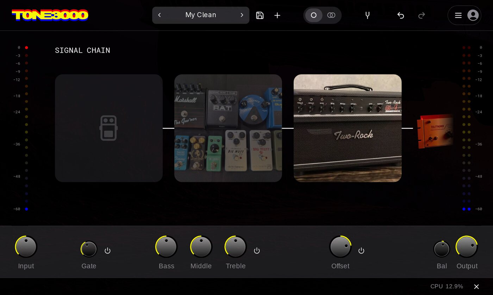
The chain, the captures, and what's approximated
Original rig: Strat (Big Dippers) -> Klon Centaur / Ibanez TS10 (lead only) -> Two-Rock John Mayer Signature prototype #83 (with Dumble Steel String Singer #002 and '64 Vibroverb blended on the record) -> 2x12 -> studio LA-2A leveling + Lexicon/plate reverb
L1boost Klon Centaur (Silver) Klon Centaur (silver), low gain clean boost offL2drive Classic Drive Pedal Collection Ibanez Tube Screamer, gain 4 (stand-in for Mayer's TS10) offL3amp Two-Rock - John Mayer Two-Rock John Mayer Signature prototype #83 clean + Dumble SSS #002 cab (full rig); pre-EQ HB->SC light pre-EQ: humbucker → single coil onL4insert Teletronix LA-2A Tube Compressor Teletronix LA-2A, Leveling - Light (post-amp studio compression) onL5echo Analog echo 360 ms, soft solo delay (generated 360 ms BBD-style echo IR · mix 20%) offL6ambience Lexicon 480L Altiverb Lexicon 480L Large Plate · mix 20% on
Notes: Amp is a full-rig capture of Mayer's actual Two-Rock JM Signature prototype (#83) through the Dumble SSS cab, clean (no boost/TS baked in). The record blended Two-Rock + Dumble SSS + '64 Vibroverb; only one amp is used here (mono, widened by Spread). Humbucker -> single-coil pre-EQ on the amp block (light version of the README curve) because the user plays a JP-style humbucker guitar and the reference is Strat-based; set eq to 0s for a fatter humbucker clean. Compression is a post-amp LA-2A 'Leveling - Light' NAM capture in slot 4 (cab slot is free since slot 3 is a full rig); NAM captures only approximate the program-dependent opto release. No real chorus in TONE3000: gentle Spread wobble stands in for movement. Reverb is a Lexicon 480L Large Plate at low mix, trimmed to 4 s. Boost = Klon (Mayer's Continuum boost), drive = Tube Screamer (his TS10 lead sound), both off; echo is a short, soft solo slapback-ish delay, off.
rigs/11-my-clean.json · sources: 1 · 2 · 3
PC 12 Petrucci Clean dual-rig stereo
Dream Theater cleans: Images and Words (1992; 'Another Day', 'Surrounded', 'Wait for Sleep') and Metropolis Pt. 2: Scenes from a Memory (1999; 'Through Her Eyes', 'The Spirit Carries On')
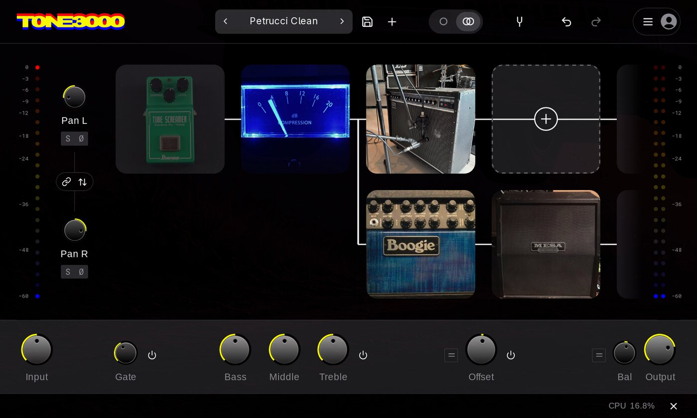
The chain, the captures, and what's approximated
Original rig: Ibanez JPM / Music Man JP (DiMarzio humbuckers) -> rack: dbx 166 compressor -> Roland JC-120 for cleans (I&W) / Mesa Mark IV + Formula Pre clean channel into Mesa 2:90 and Mesa 4x12 V30 (Scenes) -> TC Electronic 2290 stereo delay/modulation -> Lexicon PCM70 hall, stereo rack
L1boost BOOST PEDAL PACK Ibanez TS808, boost setting (JP's classic Mesa boost) offL2drive GSSL Bus Gold Compressor Compressor: GSSL bus comp (dbx VCA), attack 10 / release auto / 4:1, stands in for the rack dbx 166 onL3amp Roland JC 120B Jazz Chorus Roland JC-120B full rig, normal ch, bright on, EQ flat, Royer R-101 + SM57 (I&W cleans) onL5echo TC 2290-style stereo delay, L 410 ms (generated 410 ms BBD-style echo IR · mix 25%) onL6ambience Lexicon PCM91 Lexicon PCM91 Large Hall (for PCM70 hall) · mix 28% onR1amp Mesa Boogie Mark IV Clean [Hyper Accuracy] Mesa Mark IV clean channel, 'Petrucci Clean With EQ' (DI) (Scenes-era Mark clean) onR2cab Mesa OS 4x12 IR Mesa OS 4x12 V30, SM57 cap edge + M160 onR3echo TC 2290-style stereo delay, R 615 ms (generated 615 ms BBD-style echo IR · mix 25%) onR4ambience Lexicon PCM91 Lexicon PCM91 Large Hall (for PCM70 hall) · mix 28% on
Slots L1–L2 feed both rigs; the left and right chains are panned apart.
Notes: Dual-rig stereo mimics his stereo rack and covers both eras: L = Roland JC-120 full rig (the reported I&W clean amp), R = Mesa Mark IV clean DI capture explicitly dialled as a 'Petrucci Clean' (Mark IV / Formula Pre were the Scenes-era clean sources) into a Mesa 4x12 V30 IR. Panned wide, not hard, so both read as one lush clean. The TC 2290 / JC-120 chorus is time-varying: Align wobble between the two rigs plus Spread wobble stand in for it. The dbx 166 has no capture: the GSSL bus comp (dbx 202C VCAs, same VCA family) at 4:1 fast/auto is the always-on compressor on SW9, though a static NAM capture only approximates gain-reduction dynamics. The TS808 on SW8 is JP's classic boost, for edge-of-breakup. The 2290 stereo echo is left off per slot convention (SW8 (LEAD) turns it on), with L/R times offset for a wide stereo delay. The Lexicon PCM91 Large Hall stands in for the PCM70 (no PCM70 IRs in the catalog). Assumes humbuckers, no piezo. Stereo delay is ON by default (it's part of his clean sound); SW8 (LEAD) turns it off.
rigs/12-petrucci-clean.json · sources: 1 · 2 · 3 · 4 · 5 · 6
PC 13 Acoustic single rig
Rock acoustic parts played on an electric: unplugged-style dreadnought strumming (e.g. Purple Rain acoustic version intro, MTV Unplugged-era Martin strumming)
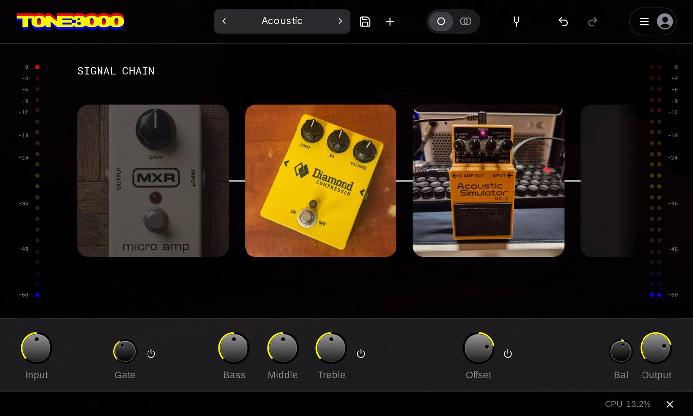
The chain, the captures, and what's approximated
Original rig: Music Man JP (DiMarzio humbuckers) -> Diamond optical compressor -> Boss AC-3 acoustic simulator (Standard) -> Martin dreadnought piezo-to-mic body IR (3 Sigma-style) -> studio room (Lexicon PCM91 Medium Room)
L1boost MXR MICROAMP MXR Micro Amp, low gain (clean level boost) offL2drive Diamond Compressor - Original Through Hole Version! Diamond Compressor (through-hole), Comp 5 / EQ 6.5 / Vol 5 onL3amp BOSS ACOUSTIC SIMULATOR AC-3 Boss AC-3 Acoustic Simulator, Standard mode, Level/Body/Top noon pre-EQ: humbucker → single coil onL4cab ACUSTIC IR PACK Acoustic body IR: Martin dreadnought (piezo -> mic) onL5echo Soft analog echo, 350 ms (generated 350 ms BBD-style echo IR · mix 20%) offL6ambience Lexicon PCM91 Lexicon PCM91 Medium Room (studio room) · mix 25% on
Notes: Two-stage emulation: the AC-3 turns the magnetic pickup into a piezo-like acoustic signal, then an acoustic body IR (built for piezo -> mic'd body conversion; names match the 3 Sigma pack) adds the wooden body/mic sound. Pre-EQ on the AC-3 thins the humbucker toward a piezo/single-coil voicing (less 100-250 Hz mud, more 3.5-8 kHz string detail); body IR gets a slight low cut to tame dreadnought boom. Alternatives on TONE3000 if this sounds too piezo-y: renpaes 'Acoustic Sim SuperStrato Humbucker Bridge' (35886/390379, tone-matched for humbucker, use without the body IR), AC-3 Jumbo (588099) for bigger strums, Gibson J45 body IR (174632) for a warmer midrange. No capture can add real bronze-string/top resonance or string zing; best on the neck humbucker (or split coil), picked lightly, with a slightly heavier pick attack. Boost = MXR Micro Amp low gain (clean level lift for picked melodies). Echo off.
PC 14 Glassy Clean single rig
Blackface Fender Twin Reverb clean on record: Dire Straits 'Sultans of Swing' / 'Down to the Waterline' (Dire Straits 1978, Communique 1979 era) and SRV 'Lenny' (Texas Flood, 1983)
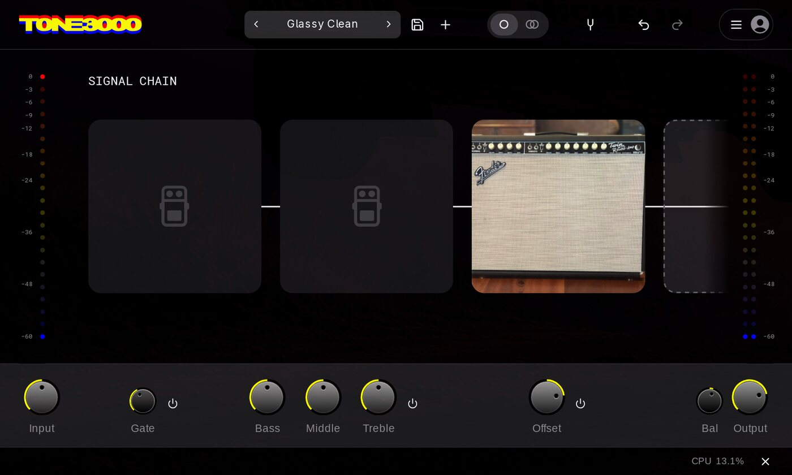
The chain, the captures, and what's approximated
Original rig: Strat (bridge/middle-in-between) -> [studio compression] -> Fender blackface Twin Reverb, Vibrato ch., bright on, low volume -> 2x12 -> built-in 4AB3C1B spring reverb (SRV: Vibroverb/Super Reverb clean, guitar volume rolled back)
L1boost Klon Centaur (Silver) Klon Centaur (silver), low gain clean boost offL2drive Boss Blues Driver BD-2 Boss Blues Driver BD-2, gain 25%, level just past unity (edge-of-breakup push) offL3amp Fender '65 Twin Reverb + Celestion G12-65 Heritage + R121+U67 Fender '65 Twin Reverb RI, Vibrato ch. bright on, vol 3.5, B7 M4.5 T5.5, G12-65 U67+R121 cap edge (pre-EQ: humbucker->single-coil) pre-EQ: humbucker → single coil onL5echo Analog delay 340 ms, 2-3 repeats, low mix (generated 340 ms BBD-style echo IR · mix 20%) offL6ambience Teletronix LA-2A Tube Compressor Teletronix LA-2A, Leveling - Light, 50% parallel (studio compression) · mix 50% onL7ambience Fender Twin Spring Reverb Fender Twin Reverb spring tank (4AB3C1B), ~reverb 2.5-3 · mix 18% on
Notes: Humbucker (Music Man JP-style) -> single-coil voicing via eq_pre [-3,-2.5,0,1.5,3,2] on the amp block (before the Twin model): trims lows/low-mids, adds 1.6k/3.5k/8k sparkle for the Strat 'glass'. Set it to all zeros if you want a fatter humbucker clean. Amp is pbear's '65 Twin RI full rig (bright on, vol 3.5-4, B7 M4.5 T5.5, G12-65 Heritage, U67+R121 cap edge) - most-downloaded, well-matched Twin clean; a real '67 blackface Twin with Jensen C12N exists (tone 94526) but is ~12 dB quiet and its variants are undocumented. Knopfler's first-album amp may have been a brown Vibrolux (Twin from mid-1978); SRV's Lenny was a Vibroverb/Super - both approximated by the Twin. Light compression = LA-2A 'Leveling - Light' NAM capture post-amp at 50% mix (NAM captures coloration, dynamics only approximately). Spring = Fender Twin's own spring tank IR at 18% mix, trimmed to 3 s. Subtle Spread, no wobble (Twin tremolo/Strat position switching not modelled). SW9 = BD-2 at 25% gain for SRV-ish edge; SW8 = Klon clean boost; SW8 (LEAD) = short slapback-ish delay.
rigs/14-glassy-clean.json · sources: 1 · 2 · 3 · 4
The case of the silent IRs
Building all of this surfaced two bugs in v0.0.9, both of the worst kind: nothing crashes, the IR just loads as silence. The log says IR prepared: 1 ch, 0.00 s and your lovely plate reverb does absolutely nothing.
Bug one: IRs that aren't 48 kHz. The Lexicon 480L plate was a 44.1 kHz file and loaded as 0.00 s. Resampled to 48 kHz, it loaded as 3.13 s. Easy: the builder now resamples everything.
Bug two was sneakier. After resampling, 9 of the 53 IR instances across five presets were still silent. Hypothesis: RIFF word alignment. A WAV chunk with an odd byte length is supposed to be followed by a pad byte, and 24-bit mono audio with an odd number of frames produces exactly that. So we tabulated the data-chunk parity of every IR instance in the rig:
Show the data
| experiment | IR | source | data bytes | parity | reported s | loaded |
|---|---|---|---|---|---|---|
| E1 sample rate | Lexicon 480L LargePlate (as downloaded) | PCM16 stereo 44.1 kHz | 0.00 | no | ||
| E1 sample rate | Lexicon 480L LargePlate (resampled) | PCM16 stereo 44.1 kHz | 494604 | even | 3.13 | yes |
| E1 sample rate | Sunset Sound EMT 140 plate (trimmed) | PCM24 4ch 48 kHz | 720000 | even | 4.17 | yes |
| E2 odd data chunk | PCM90 INSTR Rich Plate (Dream Theater L6) | PCM16 stereo 44.1 kHz | 272889 | odd | 0.00 | no |
| E2 odd data chunk | PCM90 INSTR Rich Plate (Dream Theater R4) | PCM16 stereo 44.1 kHz | 272889 | odd | 0.00 | no |
| E2 odd data chunk | Mesa Oversized V30 SM57 (Djent R2) | PCM24 mono 48 kHz | 2271 | odd | 0.00 | no |
| E2 odd data chunk | 480L Large Wood Room (Oasis L6) | PCM16 stereo 44.1 kHz | 272535 | odd | 0.00 | no |
| E2 odd data chunk | 480L Large Wood Room (Oasis R4) | PCM16 stereo 44.1 kHz | 272535 | odd | 0.00 | no |
| E2 odd data chunk | Nevermind 4x12 DIST 1 (Nirvana L4) | PCM32 mono 44.1 kHz | 61803 | odd | 0.00 | no |
| E2 odd data chunk | Nevermind 4x12 DIST 4 (Nirvana R2) | PCM32 mono 44.1 kHz | 61803 | odd | 0.00 | no |
| E2 odd data chunk | PCM91 Large Hall (Petrucci Clean L6) | PCM24 stereo 44.1 kHz | 497787 | odd | 0.00 | no |
| E2 odd data chunk | PCM91 Large Hall (Petrucci Clean R4) | PCM24 stereo 44.1 kHz | 497787 | odd | 0.00 | no |
| E2 odd data chunk | all 44 other IR instances across 15 presets | mixed | even | >0 | yes | |
| E2 fix | all 53 IR instances after padding to even frame count | mixed | even | >0 | yes |
Every IR instance in the 15 presets (n = 53), grouped by the parity of its WAV data chunk. Hover a square for the file. Data: ir-loading.csv.
Nine odd, nine silent. Forty-four even, forty-four loaded. That includes a 6 KB Mesa 4x12 IR straight from the catalog with a 2,271-byte data chunk, so it wasn't my encoder. The fix is one line:
def wav_write(samples, rate=48000):
"""Mono 24-bit PCM WAV. Always an even number of frames: TONE3000 loads a WAV
whose data chunk has an odd byte length as silence."""
samples = list(samples) + ([0.0] if len(samples) % 2 else [])
...Result: 15 of 15 presets, 53 of 53 IRs, zero silent.
Latency, measured instead of vibed
After the BIAS FX experience, I didn't trust any latency number I hadn't measured. So we measured.
Test bench: ThinkPad X1 Yoga Gen 8 (i7-1365U) on AC, PipeWire 1.6 with pipewire-jack, Focusrite Scarlett 2i2 3rd Gen, TONE3000 v0.0.9 standalone at 48 kHz. The metrics come from pw-top, sampled once a second on the TONE3000 node: B/Q (busy time ÷ cycle period, the share of each audio cycle spent processing) and xruns (cycles where the node missed its deadline; every one is an audible click). Program changes and CCs were injected with aseqsend, so every run is repeatable without touching the pedal.
L1. Hypothesis: at ~11% DSP load there's plenty of headroom for a 64-sample buffer and 4× or 8× oversampling. Rejected. 4× oversampling ran at a lower average load than 2× and still dropped out.
L2. The researched presets (dual rigs, 3–5 second echo and reverb IRs) started crackling at 128 samples. One variable at a time: process priority? Not it. Multi-core off? 104 to 352 xruns a minute, so multi-core is essential. Oversampling off helps a little. Removing the long IRs helps but isn't the root cause. Peak B/Q never went above 0.66, so this wasn't a CPU problem, it was scheduling headroom. (My session also didn't have the realtime group yet, and another app was streaming 44.1 kHz audio into the 48 kHz graph, which has to be resampled.)
L3. Sweep the buffer. 192 samples was worse than 256, with 26 xruns a minute, most likely because non-power-of-two quanta don't line up with the USB transfer size. 256 samples, oversampling off, multi-core on: zero xruns across 180 seconds on the heaviest dual rigs.
Show the data
| run | buffer | OS | multi-core | preset | s | B/Q avg | B/Q max | xruns/min | note |
|---|---|---|---|---|---|---|---|---|---|
| 1 | 128 | off | on | Slipknot | 5 | 0.11 | 0.11 | 0 | first launch; ~290us busy per 2667us cycle |
| 2 | 128 | 2x | on | Slipknot | 5 | 0.20 | 0.23 | 0 | 2x oversampling first look |
| 3 | 128 | 4x | on | Slipknot | 20 | 0.17 | 0.20 | 6.0 | |
| 4 | 128 | 8x | on | Slipknot | 15 | 0.24 | 0.30 | 12.0 | |
| 5 | 128 | 2x | on | Slipknot | 20 | 0.11 | 0.27 | 0 | |
| 6 | 64 | 2x | on | Slipknot | 30 | 0.12 | 0.19 | 24.0 | |
| 7 | 64 | off | on | Slipknot | 30 | 0.14 | 0.23 | 0 | |
| 8 | 64 | off | on | Slipknot | 60 | 0.16 | 0.30 | 4.0 | longer run |
| 9 | 128 | 2x | on | Slipknot | 60 | 0.18 | 0.30 | 0 | chosen config for v1 |
| 10 | 128 | 2x | on | Petrucci Clean | 30 | 0.25 | 0.63 | 6.0 | dual rig |
| 11 | 128 | 2x | on | Iron Maiden | 30 | 0.17 | 0.24 | 6.0 | dual rig |
| 12 | 128 | 2x | on | Radiohead | 30 | 0.21 | 0.46 | 6.0 | dual rig |
| 13 | 128 | 2x | on | Comfortably Numb | 30 | 0.17 | 0.26 | 8.0 | single rig |
| 14 | 128 | 2x | on | Acoustic | 30 | 0.18 | 0.25 | 10.0 | single rig |
| 15 | 128 | 2x | on | Petrucci Clean | 30 | 0.24 | 0.38 | 14.0 | repeat |
| 16 | 128 | 2x | on | Comfortably Numb | 30 | 0.18 | 0.29 | 14.0 | launched via systemd (nice 0) |
| 17 | 128 | 2x | on | Petrucci Clean | 30 | 0.24 | 0.30 | 32.0 | |
| 18 | 128 | 2x | on | Iron Maiden | 30 | 0.15 | 0.20 | 32.0 | |
| 19 | 128 | 2x | off | Comfortably Numb | 30 | 0.36 | 0.53 | 104.0 | everything on the audio thread |
| 20 | 128 | 2x | off | Petrucci Clean | 30 | 0.44 | 0.62 | 284.0 | |
| 21 | 128 | 2x | off | Iron Maiden | 30 | 0.34 | 0.51 | 352.0 | |
| 22 | 128 | off | on | Comfortably Numb | 30 | 0.20 | 0.25 | 16.0 | |
| 23 | 128 | off | on | Petrucci Clean | 30 | 0.23 | 0.54 | 16.0 | |
| 24 | 128 | off | on | Iron Maiden | 30 | 0.15 | 0.19 | 18.0 | |
| 25 | 128 | off | on | Comfortably Numb | 30 | 0.14 | 0.28 | 6.0 | echo + reverb IRs removed (diagnostic build) |
| 26 | 128 | off | on | Petrucci Clean | 30 | 0.19 | 0.26 | 6.0 | |
| 27 | 128 | off | on | Iron Maiden | 30 | 0.11 | 0.13 | 8.0 | |
| 28 | 128 | off | on | Comfortably Numb | 30 | 0.21 | 0.31 | 40.0 | output 0 dB; gate -60 dB; echo IR tails trimmed |
| 29 | 128 | off | on | Petrucci Clean | 30 | 0.21 | 0.25 | 40.0 | |
| 30 | 128 | off | on | Iron Maiden | 30 | 0.14 | 0.19 | 42.0 | |
| 31 | 256 | off | on | Comfortably Numb | 30 | 0.17 | 0.22 | 0 | |
| 32 | 256 | off | on | Petrucci Clean | 30 | 0.23 | 0.46 | 0 | |
| 33 | 192 | off | on | Comfortably Numb | 30 | 0.20 | 0.32 | 26.0 | non power-of-two |
| 34 | 192 | off | on | Petrucci Clean | 30 | 0.23 | 0.45 | 26.0 | |
| 35 | 192 | off | on | Iron Maiden | 30 | 0.16 | 0.45 | 26.0 | |
| 36 | 256 | off | on | Iron Maiden | 60 | 0.11 | 0.22 | 0 | final config |
| 37 | 256 | off | on | Radiohead | 60 | 0.17 | 0.29 | 0 | final config |
| 38 | 256 | 2x | on | Petrucci Clean | 60 | 0.27 | 0.66 | 2.0 | |
| 39 | 256 | 2x | on | Iron Maiden | 60 | 0.19 | 0.46 | 2.0 |
Xruns per minute from pw-top (1 Hz samples on the TONE3000 node), worst preset per configuration, with the number of runs and total seconds behind each bar. 39 runs, 5–60 s each. Data: latency-xruns.csv.
And here's the chart that changed how I think about this. If xruns tracked CPU, these dots would climb from left to right. They don't:
All 39 runs: DSP load (B/Q = busy time ÷ cycle period) against xruns per minute, on a square-root scale so 0–40 stays readable next to 352. Hover a dot for the run.
At the same 0.10–0.25 average load you get anything from 0 to 42 xruns a minute. The buffer size decides, not the load. Even peak load doesn't predict it: a 256-sample run peaked at 0.46 with zero xruns, while a 128-sample run peaked at 0.19 and clicked 42 times a minute. Xruns are about bursty per-cycle work and scheduling jitter, not the mean.
| Setting | Value | Why |
|---|---|---|
| Audio | JACK (pipewire-jack), 48 kHz / 256 samples (5.3 ms) | 0 xruns on the stereo rigs; 128 crackled (L2–L3) |
| Oversampling | off | 2× / 4× / 8× added xruns (L1, L3) |
| Multi-core | on | off = 104–352 xruns/min (L2) |
| NAM size | A2-Full | highest accuracy |
| Input | Scarlett Input 2, mono, calibration 12.5 dBu | calibration assumes the gain knob at minimum |
| Output | +14 dB | see the Great Reset below |
| Gate | on, −60 dB | −35 dB chopped note decays (L4) |
The final settings, from TONE3000.md. Every experiment is written up as question → hypothesis → method → result → conclusion in experiments/README.md.
The Great Reset
With the latency solved, one problem was left: everything was quiet. Not broken. Just small. I had to run my monitors at 50% to get a sound I'd call "playing guitar".
And I'd already been "fixing" that all day. First I cranked TONE3000's output to +24 dB and set the noise gate to −35 dB in every preset. The +24 dB hard-clipped the interface, because TONE3000 normalizes every capture to around −18 dB loudness, and the −35 dB gate chopped the tails off my notes. So: gate back to −60 dB, and a real measurement against Spotify, which said my guitar sat about 15 dB under the music. Split the difference: guitar +14 dB, Spotify −3 dB. The numbers looked great. The room still sounded quiet.
Patches on patches. Time to stop patching and do it properly.
Every digital stage at unity (0 dB, 100%). Sources matched to a common loudness reference. And exactly one volume control in the whole chain: the hardware knob on the interface.
Safety first. Before touching anything, I turned the Scarlett's Monitor knob all the way down. The 2i2 3rd Gen's knob has no numbers, it just runs from about 7 o'clock to 5 o'clock, so "all the way down" means fully counter-clockwise. You'll see why in a second: +24 dB was about to arrive, and my ears and my monitors would like to keep existing.
Then the audit, stage by stage, from the top:
- Hardware. Monitor knob at 50%. Suspicious, but it was only compensating for something.
- Linux. The PipeWire Scarlett sink was at "40%". That looks harmless until you remember PipeWire volumes are cubic: 0.4³ = 0.064 linear, which is −24 dB of software attenuation on everything. TONE3000, Spotify, YouTube, all of it. There's the culprit.
- Interface (the ALSA
scarlett2controls). Input 2 on Inst ✓. Direct Monitor off ✓. Phantom power on, but that only lives on the XLR pins, harmless. And Air on ✗: an analog presence boost before NAM, coloring the DI every capture expects to hear. Off it goes. - Apps. Spotify on this machine plays through a librespot-based backend that hardcodes its player config, so loudness normalization can't be turned on without a rebuild. WirePlumber had also remembered the −3 dB from my earlier "fix", filed under a blank app name. Back to 100%. YouTube in Chromium at 100% makes a great reference, because YouTube normalizes everything to about −14 LUFS.
- TONE3000. The output fader, still at +14 dB.
The knob map: every gain stage between my guitar and my ears, before and after the reset.
Then: measurement, not ears. We captured TONE3000's output and the YouTube stream side by side (two pw-record nodes, each linked by port id) while I played along. The guitar came in at −16.3 dBFS RMS with peaks at −5.4, against YouTube at −18.9 RMS (−14.3 at its loudest). That's the guitar about 2.5 dB over the music with 5 dB of headroom. Exactly where you want it for playing along.
Show the data
| step | TONE3000 out dB | stream gain | guitar RMS | guitar peak | music RMS | music peak | note |
|---|---|---|---|---|---|---|---|
| 1 | 0 | 0 | -30.6 | -17.9 | -16.0 | -7.8 | user playing along; guitar ~15 dB under the music |
| 2 | 14 | -3 | -18.3 | -7.0 | -31.3 | -18.8 | spotify in a quieter passage (stream gain verified: 0.705 linear = -3.0 dB) |
| 3 | 14 | 0 (YouTube/Chromium at 100%) | -16.3 | -5.4 | -18.9 | -1.2 | after gain staging: PipeWire Scarlett sink 0.40 (-24 dB!) -> 1.00; reference = YouTube (loudness-normalized ~-14 LUFS) |
TONE3000's output and the music stream captured side by side with pw-record while I played along, 20 s per step, Iron Maiden preset. Both taps sit before the sink, which is exactly why the −24 dB never showed up in these numbers. Data: levels.csv.
And here's the punchline: TONE3000's +14 dB was right all along. The −24 dB sink was the problem the whole time, and every fix before it was compensating for a slider I never looked at.
Now there's one knob to rule them all, and tone3000.py configure enforces the Linux side, so a fresh install can't drift: sink at unity, Input 2 on Inst, Air off, Direct Monitor off.
What TONE3000 can't do (yet)
I'm excited about this plugin, so let me be honest about the gaps too:
- No time-varying effects. Chorus, flanger, phaser, wah, pitch and rotary can't be captured. So no wah on EXP A anymore (it sweeps treble instead), no Leslie for Gilmour, no Whammy for My Iron Lung, and no harmonizer. The 3rds trick from my last post is BIAS-only; on TONE3000 alone, the Maiden twin leads need two players again. (Acts two and three bring back the wah and the harmony, from a DAW.) Align and Spread wobble get you movement, not modulation.
- No built-in delay or reverb. Generated echo IRs work, but they're frozen: fixed time, no tap tempo, no feedback knob mid-song.
- Some captures are stand-ins. A IIC+ plays Prince's IIB, a PCM90/91 plays the PCM70, the Triple Giant is a circuit simulation rather than a real unit, the Sunset Sound plate is a DAW emulation, there's no Colorsound Powerboost, and both Leslie captures in the catalog failed to resolve. Every preset's notes say exactly what's approximated.
- One amp per side. Oasis's Orange, WEM and Valvestate layers and Jim Root's Laney didn't make the cut.
- Loose ends. The relative loudness of the two sides of each dual rig is still untested, the tuner isn't MIDI-mappable (act four is five attempts at a tuner on SW10 anyway), and the silent-IR bugs are worked around, not fixed.
And it's version 0.0.9. For a 0.0.9, this is ridiculous.
End of act one
A native Linux amp sim, fifteen researched rigs, one floorboard that didn't need a single SysEx byte changed, zero xruns at 256 samples in the standalone, and exactly one volume knob. On a laptop. (The xruns come back in act three, with three TONE3000s in a DAW. I'm not done with them.)
Same as last time, I did all of this pair-programming, this time with Claude Code running Claude Opus 5.5. It reverse-engineered the preset format and the settings blob, read the disassembly, ran the fifteen research agents, and ran every A/B test above with pw-top and pw-record while I played. The thing I appreciate most: when the experiments rejected our hypotheses, the write-ups say so.
It sounded great. It also meant a terminal to start it and a pedal that tells you nothing about what it just switched. Hold that thought until act five.
Act two · a DAW nobody clicks
Is this all just working around not having a compressor?
The Saturday wasn't over.
With every knob back at unity, I went after the last annoyance: some presets were way louder than others. Slipknot was way louder than Nirvana. So I played one steady riff while a script stepped through all fifteen presets and measured each one's loudness (BS.1770 integrated LUFS, per preset and per channel). Untrimmed, they spanned 39 dB, from Oasis at +0.9 LUFS down to Acoustic at −38.6, and 10 of the 15 peaked above 0 dBFS. My first shortcut, replaying a recorded DI into TONE3000's JACK input, measured every preset at −12.7 LUFS ±0.1, which is how you learn that input doesn't exercise the chain like the real one. Measured live, per-chain trims pulled the distorted presets to within ±1 dB of −14 LUFS (L7). Then toggling a drive pedal made the volume jump again.
Somewhere in the middle of trimming preset number who-knows-what, I typed the question that should have come first: is this all just working around not having a compressor?
Yes. A studio has a compressor and a limiter after the amp. TONE3000 is a capture player: nothing sits after the amp to catch a peak or even out a preset that came out 3 dB hot. That's a DAW's job. So the rig was moving again.
Picking a DAW a script can drive
The requirements were short. Linux-native. Lightweight. Free. And scriptable end to end, so Claude could build the whole rig and I'd never touch a mouse. No Wine: I had just escaped it. And not Reaper: I didn't want to buy it, and I'd already uninstalled it.
How strongly did I feel about the scriptable part? This is the actual message I sent:
don't make me click anything please automate it for me or this DAW isn't it!
That became the acceptance test.
First candidate: Maolan 0.3.0. A young DAW written in Rust, shipped as an AppImage, and on paper perfect: it has an OSC API that covers tracks, plugins and routing, and the whole chain built fine over OSC. Then reality:
- the GUI panicked twice in
f32::clamp(min > max) when the window was small; - on JACK,
track addalways fails with "Engine needs to open audio device", because it only checks the non-JACK driver. That's still the case in engine HEAD; - there's no OSC command to save a session, so a script can build a rig it can never keep;
- MIDI learn can't target plugin parameters, so no footswitches.
Second candidate: Qtractor 1.6.4. Older, less shiny, and its sessions are plain XML. Which means the session doesn't have to be driven at all. It can just be written. qtractor_rig.py generates the entire rig: the buses and their exact JACK connections, a MIDI track holding the plugin chain, per-plugin CC bindings, and even TONE3000's state blob (a qCompress'd T3KB, the same format we reverse-engineered for the presets). Transport and recording run over MMC. Save-and-quit is SIGUSR1, then SIGTERM. Nothing is clicked.
| What the script needs | Maolan 0.3.0 | Qtractor 1.6.4 |
|---|---|---|
| Linux-native, no Wine, free | ✓ | ✓ |
| Build the chain from code | ✓ OSC API | ✓ session XML, generated |
| Add a track on JACK | ✗ "Engine needs to open audio device" | ✓ |
| Save from a script | ✗ no OSC save | ✓ SIGUSR1 |
| Footswitch CCs onto plugin parameters | ✗ MIDI learn can't target them | ✓ per-plugin CC bindings |
| Record from a script | not reached | ✓ MMC |
From experiment D0 in experiments/README.md.
Two constraints came out of reading Qtractor's source rather than its docs. Plugins only receive MIDI on MIDI tracks and buses, so the guitar comes in through an Audio Insert on a MIDI track. And only the CLAP build of a plugin gets raw Program Change; the VST3 path drops it. TONE3000 ships a CLAP, so that's the one the session loads.
The first DAW rig (experiments D0–D4): TONE3000 as a CLAP plugin between real wah and octaver plugins, with a compressor and limiter on the way out. Gold = switchable from the floor.
A nice side effect: the DAW brings back what the FCB layout was originally for. SW6 is a real wah again, SW7 a real octaver, EXP A sweeps the wah. They're Guitarix plugins, so they do the time-varying things a capture can't. TONE3000 keeps SW8 boost, SW9 drive, SW10 echo and EXP B output. For now: the top row moves around a bit later on, and the full pedal map has where it ended up.
Did the compressor earn its place?
Bench: same laptop and interface, Qtractor on pipewire-jack at 256 samples / 48 kHz. The test input is a dry DI loop played into the rig's insert with pw-play, so it goes through the same plugin instance as the live guitar (unlike the JACK-input replay that fooled me above). Program changes and CCs go into Qtractor's FCB port with aseqsend, and every PC was verified by reading activePresetName back from the saved plugin state.
D1. Hypothesis: an LSP compressor (−18 dB threshold, 3:1, 10/120 ms, +3 dB makeup) plus the x42 true-peak limiter at −1 dBTP shrink the loudness spread across presets and remove the overs. Method: the full 15-preset sweep, once with both plugins deactivated and once with both active, everything else identical.
Show the data
| PC | preset | dynamics | pedals | LUFS | peak dBFS |
|---|---|---|---|---|---|
| 0 | Comfortably Numb | off | as loaded | -13.4 | -1.7 |
| 1 | Purple Rain | off | as loaded | -18.0 | -1.1 |
| 2 | Tornado of Souls | off | as loaded | -14.4 | -6.9 |
| 3 | Dream Theater | off | as loaded | -14.4 | -5.4 |
| 4 | Slipknot | off | as loaded | -14.7 | -4.8 |
| 5 | Djent | off | as loaded | -14.5 | -5.3 |
| 6 | Radiohead | off | as loaded | -11.9 | -0.6 |
| 7 | Oasis | off | as loaded | -14.2 | -6.3 |
| 8 | Nirvana | off | as loaded | -13.2 | -4.9 |
| 9 | Foo Fighters | off | as loaded | -14.9 | -4.6 |
| 10 | Iron Maiden | off | as loaded | -13.6 | -1.9 |
| 11 | My Clean | off | as loaded | -17.1 | -1.3 |
| 12 | Petrucci Clean | off | as loaded | -14.0 | 2.8 |
| 13 | Acoustic | off | as loaded | -8.8 | 3.0 |
| 14 | Glassy Clean | off | as loaded | -14.9 | -0.5 |
| 0 | Comfortably Numb | off | drive toggled | -12.6 | 3.9 |
| 1 | Purple Rain | off | drive toggled | -15.2 | -4.8 |
| 2 | Tornado of Souls | off | drive toggled | -14.6 | -6.6 |
| 3 | Dream Theater | off | drive toggled | -14.9 | -5.7 |
| 4 | Slipknot | off | drive toggled | -14.8 | -4.6 |
| 5 | Djent | off | drive toggled | -14.2 | -4.6 |
| 6 | Radiohead | off | drive toggled | -14.3 | -0.9 |
| 7 | Oasis | off | drive toggled | -15.5 | -6.2 |
| 8 | Nirvana | off | drive toggled | -17.5 | -6.2 |
| 9 | Foo Fighters | off | drive toggled | -14.3 | -4.8 |
| 10 | Iron Maiden | off | drive toggled | -11.7 | -1.0 |
| 11 | My Clean | off | drive toggled | -17.6 | -5.3 |
| 12 | Petrucci Clean | off | drive toggled | -13.8 | 3.4 |
| 13 | Acoustic | off | drive toggled | -14.7 | -1.6 |
| 14 | Glassy Clean | off | drive toggled | -15.1 | -1.0 |
| 0 | Comfortably Numb | on | as loaded | -11.0 | -1.0 |
| 1 | Purple Rain | on | as loaded | -15.5 | -1.0 |
| 2 | Tornado of Souls | on | as loaded | -11.6 | -4.1 |
| 3 | Dream Theater | on | as loaded | -12.1 | -3.0 |
| 4 | Slipknot | on | as loaded | -12.0 | -2.4 |
| 5 | Djent | on | as loaded | -11.8 | -2.6 |
| 6 | Radiohead | on | as loaded | -11.8 | -1.0 |
| 7 | Oasis | on | as loaded | -11.4 | -3.3 |
| 8 | Nirvana | on | as loaded | -11.1 | -2.7 |
| 9 | Foo Fighters | on | as loaded | -12.5 | -2.8 |
| 10 | Iron Maiden | on | as loaded | -11.4 | -1.0 |
| 11 | My Clean | on | as loaded | -14.8 | -1.0 |
| 12 | Petrucci Clean | on | as loaded | -13.0 | -1.0 |
| 13 | Acoustic | on | as loaded | -10.9 | -1.0 |
| 14 | Glassy Clean | on | as loaded | -13.4 | -1.0 |
| 0 | Comfortably Numb | on | drive toggled | -12.1 | -1.0 |
| 1 | Purple Rain | on | drive toggled | -12.2 | -1.9 |
| 2 | Tornado of Souls | on | drive toggled | -11.7 | -3.7 |
| 3 | Dream Theater | on | drive toggled | -12.5 | -3.3 |
| 4 | Slipknot | on | drive toggled | -12.0 | -1.7 |
| 5 | Djent | on | drive toggled | -11.5 | -1.9 |
| 6 | Radiohead | on | drive toggled | -13.0 | -1.0 |
| 7 | Oasis | on | drive toggled | -12.7 | -3.4 |
| 8 | Nirvana | on | drive toggled | -14.8 | -3.5 |
| 9 | Foo Fighters | on | drive toggled | -11.8 | -2.8 |
| 10 | Iron Maiden | on | drive toggled | -9.9 | -1.0 |
| 11 | My Clean | on | drive toggled | -14.8 | -2.8 |
| 12 | Petrucci Clean | on | drive toggled | -12.9 | -1.0 |
| 13 | Acoustic | on | drive toggled | -14.0 | -1.0 |
| 14 | Glassy Clean | on | drive toggled | -13.3 | -1.0 |
D1: the 15 presets on the DI loop, dynamics bypassed vs compressor + limiter on. Hover a dot for the value. Data: daw-dynamics.csv.
Confirmed. The spread across all fifteen presets halved, from 9.2 dB (−18.0 … −8.8 LUFS) to 4.6 dB (−15.5 … −10.9). The ten distorted presets went from a 3.0 dB window to 1.5 dB. And two presets, Acoustic and Petrucci Clean, had been clipping the output outright at +3.0 and +2.8 dBFS. Now nothing passes −1 dBFS. The cleans stay a bit lower on purpose; Purple Rain should not be as loud as Slipknot.
D2. Same sweep, but with SW9 (the drive slot, CC 23) toggled after each program change:
D2: loudness change when the drive slot (SW9, CC 23) is toggled right after each PC. Positive = louder with the toggle. Data: daw-dynamics.csv.
The mean jump went from 1.47 to 1.13 dB, the largest from 5.9 dB (Acoustic) to 3.7 dB, and the worst peak with the drive toggled from +3.9 to −1.0 dBFS. What's left is mostly musical: Purple Rain's solo drive adds 3.3 dB and dropping Nirvana's DS-1 takes away 3.7. A solo pedal that doesn't get louder isn't a solo pedal.
D3, every pedal on at once: wah and octaver on top of Nirvana, Qtractor at 0.19–0.30 B/Q, about 1.0–1.6 ms of the 5.3 ms cycle, and no xruns added. The octaver is audibly there, and measurably too: the 40–120 Hz band rose 2.9 dB relative to 120–1000 Hz at the same loudness.
D4, recording by script. qtractor_rig.py record sends MMC record + play, qtractor_rig.py stop ends the take. Six seconds of DI later there were two files: rig-Rig_Print-1.wav (the processed stereo rig, peak −1.0 dBFS) and rig-DI-1.wav (the dry mono DI, peak −1.4 dBFS), both exactly 320,512 frames long and sample-aligned. Every take comes with a DI I can re-amp later. The footswitches were checked the same way: SW6 turned the wah on, SW7 the octaver, and EXP A at 32/127 put the wah at 0.252, all read back from the saved session.
So now I had a real rig: pedals, amps, a mix bus, a recorder. Which meant I could finally ask for what I actually wanted.
Act three · up the Irons
Seven eras of Maiden on one floorboard
Here is the brief, verbatim:
hardcore maiden sound range from their top album sounds from each era... be maiden heavy... switching sounds within the same song quickly... make it world class
That's two projects hiding in one sentence. One is research: what did Dave Murray, Adrian Smith and Janick Gers actually play, record by record? The other is engineering: switching sounds within a song, instantly. The second one turned out to be the hard one.
Seven research agents, one per album
Same trick as the first fifteen presets, scaled up. Seven research agents, one per album era: 1982, 1983, 1984, 1986, 1988, 1992 and the 2000s reunion. Each one had to find who played what through what on that record, cite it, find TONE3000 captures of that exact gear, and write three presets: heavy, clean and acoustic. That's 21 presets backed by 143 source citations (70 distinct URLs), and every file lists what had to be approximated.
| Bank | Era | Left: Dave Murray | Right |
|---|---|---|---|
| 03 | The Number of the Beast (1982) | Marshall JMP 2204 50 W (1977) | Smith: JMP 1987 50 W (1973), inputs jumpered, volumes full |
| 04 | Piece of Mind (1983) | 1976 JMP 50 W full rig, 1960A blackbacks | Smith: 1980 JMP 2204 |
| 05 | Powerslave (1984) | Marshall 1987 50 W, vol 7, mids 10 | Smith: JMP 2203 100 W (1983) |
| 06 | Somewhere in Time (1986) | Gallien-Krueger 250ML, "Maiden" preamp setting | Smith: GK 250ML full rig |
| 07 | Seventh Son of a Seventh Son (1988) | GK 250ML | Smith: GK 2000CPL, the preamp in the 2100SEL rack |
| 08 | Fear of the Dark (1992) | Marshall JCM900 4100 | Gers: JCM800 2203 |
| 09 | Brave New World / Dance of Death (2000, 2003) | Marshall JMP-1 preset 04 "British Steel" into a 1960BV V30 | Smith: JCM2000 DSL Ultra Gain |
The heavy preset of each era. Clean and acoustic presets, cabs, mics, pedals and every source: rigs/RIGS.md and rigs/15–35.
Reading the notes these agents wrote was the most fun I've had with a pile of JSON:
- 1982: Guitar World in 1983 says "four fifty-watt Marshalls". The catalog has one of each 50 W JMP type, so Murray gets a 1977 2204 (master volume) and Smith a 1973 1987 (non-master) with the inputs jumpered and both volumes full: Smith's "natural overdriven Marshall".
- 1983: Smith says the studio setup was the stage setup, amps in "a big wooden room" at Compass Point. So the always-on ambience is a Lexicon 480L Large Wood Room, and the echo (SW9 in these banks) is 375 ms: a quarter note of The Trooper at ~160 BPM.
- 1984: Smith's own summary of the Powerslave tone is a 100-watt Marshall and "maybe an Ibanez Tube Screamer", and "that was it as far as the guitar sound of Powerslave goes". So the TS9 sits in the drive slot, off by default, because Murray used none.
- 1986: both players on the solid-state GK 250ML. The delay is timed to Wasted Years: a quarter note at 154 BPM (390 ms) on Murray's side, a dotted eighth (292 ms) on Smith's. And since it's the most chorused Maiden record, it gets more Align wobble than Seventh Son.
- 1988: the Seventh Son rig from the first half of this post, re-cut for the scene bank. Its echo (SW9) is 380 ms, deliberately matched to the DAW's solo delay so the two land on the same repeats instead of flamming.
- 1992: the one period quote is Murray in 1990, showing off "new Marshall amps that go to 20". That's the JCM900 4100 Hi Gain Dual Reverb, whose gain dials run 0–20. Gers' head from that era isn't documented, so the right side gets the JCM800 2203 Gers had used since Gillan, and the notes say it's a guess.
- 2000s: Murray's 2003 rack is fully documented (JMP-1 into a 9200 power amp into 1960BV Vintage 30s). Kevin Shirley added no reverb on Dance of Death, just the studio's room mics, so the ambience is a wood room at 10%. The acoustic preset is Journeyman, Maiden's first and only fully acoustic song.
And the acoustics are thought through too. Seventh Son's acoustic preset puts a steel-string dreadnought on the left and a nylon classical body on the right, for Murray's classical outro on The Prophecy.
The full pedal map
Before the engineering, here's where the board ended up, after everything else in this act and the next: the harmony, the per-song echo and, last of all, a tuner. Ten banks, two layouts. It's declared once, as data, in rig.py (uv run rig.py show prints it), and both boards below are drawn from that same file. Everything is on MIDI channel 1, except the second and third Program Change of a Maiden switch: channel 2 for the DAW's clean rig, channel 3 for its harmony rig.
Song banks 00–02: one song per switch. The bottom row loads a song, the top row is pedals.
Show the data
| Bank | SW1 | SW2 | SW3 | SW4 | SW5 |
|---|---|---|---|---|---|
| 00 | Comfortably Numb PC 0 | Purple Rain PC 1 | Tornado of Souls PC 2 | Dream Theater PC 3 | Slipknot PC 4 |
| 01 | Djent PC 5 | Radiohead PC 6 | Oasis PC 7 | Nirvana PC 8 | Foo Fighters PC 9 |
| 02 | Iron Maiden PC 10 | My Clean PC 11 | Petrucci Clean PC 12 | Acoustic PC 13 | Glassy Clean PC 14 |
Banks 00–02: the fifteen songs, drawn from rig.py. Blue = the same in all ten banks: SW6 WAH, SW10 TUNER and the two expression pedals.
SW8 is LEAD now: the boost and the song's solo echo on one switch. That's one CC, 26, mapped onto three TONE3000 targets: the boost slot and the echo on both sides of a dual rig. The echo used to have SW10 to itself. SW10 is the tuner now, in every bank.
Maiden banks 03–09: one layout for every era. The floorboard had to make "switch sounds within the same song" a single stomp. So every Maiden bank has the same five scenes on the bottom row, and the same five pedals on the top:
Banks 03–09: one album era per bank, same switches everywhere. Gold = scene switches (absolute CCs, see the table below) and SW7 HARMONY, which replaced the octaver in these banks. Blue = the same in all ten banks.
RHYTHM, SOLO, CLEAN, ACOUSTIC and CRUNCH are scenes, not songs. SOLO pushes the amps and adds a lead echo. CRUNCH is the guitar-volume-rolled-back sound, like the Fear of the Dark intro. CLEAN and ACOUSTIC are the era's reverby clean and electric-to-acoustic presets. To change song or era, pick the bank and press RHYTHM, CLEAN or ACOUSTIC: those three load the era.
SOLO and CRUNCH take care of the gain here, so these banks have no drive switch: SW9 carries the era's delay + reverb instead. SW7 started out as the octaver here too. It didn't stay that way: it's now HARMONY, the second guitarist, and that story comes after the xruns. Each era also gets a signature song, which sets SOLO's echo time and HARMONY's key (more on that later):
| Bank | Era | Signature song | Scale | Solo echo | PCs |
|---|---|---|---|---|---|
| 03 | The Number of the Beast (1982) | Hallowed Be Thy Name | E natural minor | 571 ms | 15 · 16 · 17 · 36 |
| 04 | Piece of Mind (1983) | The Trooper | E natural minor | 375 ms | 18 · 19 · 20 · 37 |
| 05 | Powerslave (1984) | Rime of the Ancient Mariner | E natural minor | 536 ms | 21 · 22 · 23 · 38 |
| 06 | Somewhere in Time (1986) | Wasted Years | E natural minor | 390 ms | 24 · 25 · 26 · 39 |
| 07 | Seventh Son of a Seventh Son (1988) | The Evil That Men Do | E natural minor | 375 ms | 27 · 28 · 29 · 40 |
| 08 | Fear of the Dark (1992) | Fear of the Dark | D Dorian | 750 ms | 30 · 31 · 32 · 41 |
| 09 | Brave New World / Dance of Death (2000, 2003) | Blood Brothers | E natural minor | 339 ms | 33 · 34 · 35 · 42 |
From the scene-bank table in rigs/RIGS.md. PCs: heavy · clean · acoustic · harmony.
Whose solo? Both guitarists play at once on this board: Murray on the left, Smith or Gers on the right. No footswitch tells you whose solo it is, so the guitar does. Neck pickup for Murray's fluid legato, bridge for Smith's and Gers' bite. SOLO then adds the push and the echo on top.
What every switch sends. Scene switches send absolute values, so they're instant and always land in the same state. Everything on the top row is a toggle: the stock FCB sends 127 on every press, and every press flips it.
| Switch | Song banks 00–02 | Maiden banks 03–09 |
|---|---|---|
| SW1 | SONG: PC 0–14 on ch 1, CC 80 = 63, CC 81 = 0. Preset load. Loads the song and resets the scene state: heavy rig, Solo block off. | RHYTHM: PC heavy (ch 1) + clean (ch 2) + harmony (ch 3), CC 80 = 63, CC 81 = 0. Instant scene. Twin-guitar rhythm. After a bank change, this is what loads the era. |
| SW2 | SOLO: no PC, CC 80 = 72, CC 81 = 0. Instant scene. Amps pushed, +2 dB and the song's lead echo. | |
| SW3 | CLEAN: PC heavy (ch 1) + clean (ch 2) + harmony (ch 3), CC 80 = 63, CC 81 = 127. Instant scene. The era's reverby clean. | |
| SW4 | ACOUSTIC: the same PCs with the acoustic preset on ch 2, CC 80 = 63, CC 81 = 127. Instant scene. Electric-to-acoustic. | |
| SW5 | CRUNCH: no PC, CC 80 = 48, CC 81 = 0. Instant scene. The volume-knob-down sound. | |
| SW6 | WAH: CC 20. Toggle. The Guitarix wah in the DAW; EXP A sweeps it. | |
| SW7 | OCTAVER: CC 21. Toggle. Guitarix, an octave down. | HARMONY: CC 25. Toggle. The second guitarist, a diatonic third up in the song's key. |
| SW8 | LEAD: CC 26. Toggle. The boost (slot 1) and the song's echo (slot 5, and R3 on a dual rig) together. | BOOST: CC 22. Toggle. The boost pedal (slot 1). |
| SW9 | DRIVE: CC 23. Toggle. The song's drive pedal (slot 2). | DELAY + REVERB: CC 24. Toggle. The era's delay + reverb (slot 5 and R3). |
| SW10 | TUNER: CC 28. Toggle. GuitarMood mutes the rig and opens the Fretwise tuner in the Omarchy bar, on the clean guitar input. Press again to play. | |
| EXP A | CC 27: wah sweep. | |
| EXP B | CC 7: volume (TONE3000's output level). | |
From the pedal map in README.md, with the numbers from rig.py.
The tuner. SW10 mutes the rig and opens a tuner on the guitar input; press it again to play. It's the same in all ten banks. It also took five tries and one very confusing practice session, so it gets its own act.
Why a scene can't just be a preset
The obvious design is a preset per scene and a Program Change per stomp. Before building that, we measured what a PC costs.
D5. Question: can scenes within a song be separate presets? Method: the DI loop plays continuously while aseqsend fires a PC every 2 seconds; the output is recorded and the 10 ms RMS envelope around each switch is inspected, four switches per pair.
D5: how long the output sits more than 20 dB below its running level after a Program Change, as ranges over 4 switches per pair. The dashed tempo lines are arithmetic from The Trooper's ~160 BPM, not measurements.
Rejected. A Program Change mutes the plugin while it rebuilds the chain: 60–170 ms of digital silence, longer on the heavier rigs. That's fine between songs. Mid-song it's most of an eighth note at The Trooper's ~160 BPM, and it lands exactly where you don't want it: on the first chord of the solo. But look at the last row. Re-sending the PC that's already loaded doesn't rebuild the chain. That one detail is what makes the whole scene engine possible.
The scene engine: two TONE3000s and a Selector
If loading a preset leaves a hole, don't load one. Load both sounds up front and switch between them.
The scene engine as qtractor_rig.py generates it. Dashed gold = MIDI; gold boxes are switched by the scene CCs.
- Two instances. Qtractor runs a heavy TONE3000 on MIDI channel 1 and a clean one on channel 2. Changing song loads the era into both.
- The Selector. An Audio Insert at the top of the heavy chain, switched by CC 81. Bypassed, it passes the guitar on to the heavy rig. Active, it sends the guitar to the clean rig's input and mutes the heavy path. It's one parameter, so the choice is exclusive by construction: there is no state where both rigs hear the guitar, or neither.
- CC 80 does two jobs. The heavy TONE3000 reads it through its own MIDI map as
inputLevel= value/127, like rolling the guitar volume. And Qtractor switches the Solo block on above 63. - Absolute values, always. Every stomp sends both CCs with fixed values, so a scene lands in the same state no matter what came before. No toggles to get out of sync.
| Switch | Scene | Heavy PC (ch 1) | Clean PC (ch 2) | Harmony PC (ch 3) | CC 80 drive | CC 81 rig |
|---|---|---|---|---|---|---|
| SW1 | RHYTHM | song | clean | harmony | 63 | heavy |
| SW2 | SOLO | — | — | — | 72 | heavy |
| SW3 | CLEAN | song | clean | harmony | 63 | clean |
| SW4 | ACOUSTIC | song | acoustic | harmony | 63 | clean |
| SW5 | CRUNCH | — | — | — | 48 | heavy |
What each scene switch sends, from rigs/RIGS.md. RHYTHM, CLEAN and ACOUSTIC re-send the song's PCs, which only reload anything when you've changed bank. The channel 3 column arrived with the harmony.
Why a Selector instead of just binding CC 81 to "heavy off, clean on"? Because Qtractor allows one observer per (type, channel, CC). One CC can't drive two parameters. And a PC reaches Qtractor's controllers as a trigger with value 127, so a PC can only ever switch a parameter one way. One parameter that routes gets around both.
D6, the checks, with Iron Maiden as the heavy rig and My Clean as the clean one. With CC 81 = 0 the Selector's send measured −180 dBFS, so the clean rig hears nothing; with 127 it carried the DI at −21.6 dBFS. CC 80 = 72 set the heavy inputLevel to 0.567 and switched the lead delay on, while the clean instance didn't budge. Then a scene walk, rhythm → solo → clean → rhythm → crunch → clean: sound throughout. The quietest 10 ms within 300 ms of each switch was −17 … −29 dB, against −16 … −19 dB for the same DI with no switch at all. No PC-style hole anywhere.
D7, the price: with both instances loaded, Qtractor ran at 0.43–0.58 B/Q against 0.19–0.30 with one, still with zero xruns at 256 samples. The clean rig hears the guitar through a JACK self-connection, which should add one period (5.3 ms) on the clean and acoustic scenes only. That's what JACK does with feedback connections; I haven't measured it.
The race: a Program Change wipes CC 80
The first version of the board had a bug you could only find by reading state back.
D8. Method: send the loaded preset's PC and CC 80 = 72 in one burst, then read the heavy inputLevel back from the saved session. Expected 0.567 (72/127). Got 0.496, the preset's own value. CC 80 on its own gave 0.567, and so did sending it 100 ms after the PC. Cause: TONE3000 re-applies a preset's parameters asynchronously after a PC, even for the preset already loaded, so it quietly undid the CC that arrived in the same burst.
The fix is in the table above. SOLO and CRUNCH send only CCs. RHYTHM, CLEAN and ACOUSTIC do send PCs, but at CC 80 = 63, which is exactly the drive every heavy preset loads with, so the race has nothing left to change. rig.py's verify step runs before every upload and refuses a board that breaks either rule.
The second trap was subtler. With dynamics bypassed, SOLO's input push (0.496 → 0.567, roughly +3.4 dB if the parameter spans ±24 dB like the block gains) made the solo only +0.4 … +1.1 LUFS louder. Of course: a cranked amp compresses. Pushing it gives you more sustain and more hair, not more level. Great for feel, useless for being heard over the band. Turning up the Guitarix delay didn't help either (≤ 0.2 dB), because its gain only scales the echoes.
So SOLO got a Solo block: an LSP slap-back delay with the dry signal at +2 dB and a single 380 ms tap (feedback 0.3, filtered to 250 Hz – 4.5 kHz, 10 dB down). It switches on above CC 80 = 63 and is exactly unity when bypassed.
D8/D9: SOLO over RHYTHM (and CRUNCH under it), one dot per era. The outlined bar is the range the experiment log reports for the Solo block without dynamics; that pass has no per-era rows in the CSV. Data: maiden-levels.csv.
Now the solo sits 2.9–3.1 dB over the rhythm before the compressor, and 1.4–2.1 dB after it. CRUNCH lands 0.1–1.1 dB under RHYTHM: quieter, but mostly just cleaner, like rolling back the volume knob.
13 dB between Murray and Smith
Then the leveling, and the best bug of the day.
D9. The first sweep of all 21 presets, as the agents delivered them, measured with the compressor and limiter bypassed so every trim is linear. Heavy rhythm ranged from −9.1 to −13.7 LUFS. Acoustic ranged from −15.5 up to +10.9 LUFS, with peaks at +25.9 dBFS. That's 1992's acoustic preset, running roughly 26 dB hotter than the target.
And from the second pass on we measured each side separately. On Piece of Mind, Murray's side came in at −9.3 LUFS and Smith's at −22.4: 13.1 dB apart. Somewhere in Time was 11.3 dB apart the other way round. In a hard-panned dual rig, that's not a stereo mix. That's one guitarist.
Here's the part that stung: with the dynamics on, none of this was audible in the numbers. The limiter had been flattening all of it. A limiter is a safety net, and a safety net is a terrible place to hide your gain staging.
The fixes, in order:
- Gain-staging audit. Two acoustic presets drove the Boss AC-3 capture far hotter than the validated Acoustic preset (PC 13) does: 1992's by +20 dB from a compressor in front of it, 1986's by +9 dB on the input. Both went back to unity. The trim script also learned to skip partial-mix blocks, where a gain change only scales the wet part.
- Trims. Each chain gets its trim on the last level-setting block before the echo and ambience, so the reverbs follow. Each chain is shifted to the average of its two sides, which balances them. Then two linear passes toward −14 LUFS for heavy and −15.5 for clean and acoustic.
Show the data
| pass | dynamics | era | scene | LUFS | peak dBFS | left LUFS | right LUFS |
|---|---|---|---|---|---|---|---|
| nodyn-1 as delivered | off | Maiden 82 | rhythm | -13.7 | -3.2 | ||
| nodyn-1 as delivered | off | Maiden 82 | solo | -13.3 | -2.5 | ||
| nodyn-1 as delivered | off | Maiden 82 | crunch | -14.2 | -3.3 | ||
| nodyn-1 as delivered | off | Maiden 82 | clean | -14.4 | 2.6 | ||
| nodyn-1 as delivered | off | Maiden 82 | acoustic | -13.7 | 1.2 | ||
| nodyn-1 as delivered | off | Maiden 83 | rhythm | -9.1 | 1.9 | ||
| nodyn-1 as delivered | off | Maiden 83 | solo | -8.7 | 2.2 | ||
| nodyn-1 as delivered | off | Maiden 83 | crunch | -9.3 | 1.3 | ||
| nodyn-1 as delivered | off | Maiden 83 | clean | -13.6 | 2.0 | ||
| nodyn-1 as delivered | off | Maiden 83 | acoustic | -15.5 | 2.1 | ||
| nodyn-1 as delivered | off | Maiden 84 | rhythm | -13.7 | -3.1 | ||
| nodyn-1 as delivered | off | Maiden 84 | solo | -13.2 | -3.0 | ||
| nodyn-1 as delivered | off | Maiden 84 | crunch | -14.3 | -3.2 | ||
| nodyn-1 as delivered | off | Maiden 84 | clean | -15.9 | -4.7 | ||
| nodyn-1 as delivered | off | Maiden 84 | acoustic | -13.6 | -1.5 | ||
| nodyn-1 as delivered | off | Maiden 86 | rhythm | -10.0 | 0.6 | ||
| nodyn-1 as delivered | off | Maiden 86 | solo | -9.5 | 1.1 | ||
| nodyn-1 as delivered | off | Maiden 86 | crunch | -10.8 | 0.4 | ||
| nodyn-1 as delivered | off | Maiden 86 | clean | -13.5 | -0.6 | ||
| nodyn-1 as delivered | off | Maiden 86 | acoustic | -13.6 | 0.4 | ||
| nodyn-1 as delivered | off | Maiden 88 | rhythm | -13.4 | -1.0 | ||
| nodyn-1 as delivered | off | Maiden 88 | solo | -12.2 | 0.3 | ||
| nodyn-1 as delivered | off | Maiden 88 | crunch | -15.1 | -2.8 | ||
| nodyn-1 as delivered | off | Maiden 88 | clean | -12.9 | 0.9 | ||
| nodyn-1 as delivered | off | Maiden 88 | acoustic | -13.7 | -0.1 | ||
| nodyn-1 as delivered | off | Maiden 92 | rhythm | -13.4 | -4.1 | ||
| nodyn-1 as delivered | off | Maiden 92 | solo | -12.6 | -3.2 | ||
| nodyn-1 as delivered | off | Maiden 92 | crunch | -14.5 | -4.4 | ||
| nodyn-1 as delivered | off | Maiden 92 | clean | -14.9 | -2.1 | ||
| nodyn-1 as delivered | off | Maiden 92 | acoustic | 10.9 | 25.9 | ||
| nodyn-1 as delivered | off | Maiden 2000s | rhythm | -12.6 | -1.7 | ||
| nodyn-1 as delivered | off | Maiden 2000s | solo | -12.3 | -1.1 | ||
| nodyn-1 as delivered | off | Maiden 2000s | crunch | -12.8 | -2.3 | ||
| nodyn-1 as delivered | off | Maiden 2000s | clean | -12.6 | 1.3 | ||
| nodyn-1 as delivered | off | Maiden 2000s | acoustic | -3.9 | 8.7 | ||
| nodyn-2 after gain-staging fix | off | Maiden 82 | rhythm | -13.7 | -3.2 | -18.5 | -15.4 |
| nodyn-2 after gain-staging fix | off | Maiden 82 | solo | -13.3 | -2.5 | -17.9 | -15.1 |
| nodyn-2 after gain-staging fix | off | Maiden 82 | crunch | -14.2 | -3.3 | -19.4 | -15.8 |
| nodyn-2 after gain-staging fix | off | Maiden 82 | clean | -14.5 | 2.5 | -25.5 | -14.9 |
| nodyn-2 after gain-staging fix | off | Maiden 82 | acoustic | -13.7 | 1.2 | -14.6 | -20.9 |
| nodyn-2 after gain-staging fix | off | Maiden 83 | rhythm | -9.1 | 1.9 | -9.3 | -22.4 |
| nodyn-2 after gain-staging fix | off | Maiden 83 | solo | -8.7 | 2.2 | -9.0 | -22.0 |
| nodyn-2 after gain-staging fix | off | Maiden 83 | crunch | -9.3 | 1.3 | -9.5 | -22.8 |
| nodyn-2 after gain-staging fix | off | Maiden 83 | clean | -13.6 | 2.0 | -20.8 | -14.5 |
| nodyn-2 after gain-staging fix | off | Maiden 83 | acoustic | -15.4 | 2.1 | -16.6 | -21.8 |
| nodyn-2 after gain-staging fix | off | Maiden 84 | rhythm | -13.7 | -3.1 | -18.5 | -15.5 |
| nodyn-2 after gain-staging fix | off | Maiden 84 | solo | -13.2 | -2.9 | -17.8 | -15.1 |
| nodyn-2 after gain-staging fix | off | Maiden 84 | crunch | -14.4 | -3.2 | -19.4 | -16.0 |
| nodyn-2 after gain-staging fix | off | Maiden 84 | clean | -15.9 | -4.7 | -21.6 | -17.3 |
| nodyn-2 after gain-staging fix | off | Maiden 84 | acoustic | -13.6 | -1.3 | -18.4 | -15.3 |
| nodyn-2 after gain-staging fix | off | Maiden 86 | rhythm | -10.0 | 0.7 | -21.6 | -10.3 |
| nodyn-2 after gain-staging fix | off | Maiden 86 | solo | -9.5 | 0.8 | -21.4 | -9.7 |
| nodyn-2 after gain-staging fix | off | Maiden 86 | crunch | -10.9 | 0.5 | -21.7 | -11.3 |
| nodyn-2 after gain-staging fix | off | Maiden 86 | clean | -13.5 | -0.7 | -16.1 | -17.0 |
| nodyn-2 after gain-staging fix | off | Maiden 86 | acoustic | -22.4 | -7.6 | -23.5 | -28.9 |
| nodyn-2 after gain-staging fix | off | Maiden 88 | rhythm | -13.4 | -1.0 | -17.5 | -15.6 |
| nodyn-2 after gain-staging fix | off | Maiden 88 | solo | -12.2 | 0.4 | -17.2 | -13.9 |
| nodyn-2 after gain-staging fix | off | Maiden 88 | crunch | -15.1 | -2.7 | -17.7 | -18.6 |
| nodyn-2 after gain-staging fix | off | Maiden 88 | clean | -12.9 | 0.9 | -15.4 | -16.5 |
| nodyn-2 after gain-staging fix | off | Maiden 88 | acoustic | -13.7 | -0.1 | -15.6 | -18.1 |
| nodyn-2 after gain-staging fix | off | Maiden 92 | rhythm | -13.4 | -4.1 | -15.8 | -17.1 |
| nodyn-2 after gain-staging fix | off | Maiden 92 | solo | -12.6 | -3.2 | -15.3 | -16.0 |
| nodyn-2 after gain-staging fix | off | Maiden 92 | crunch | -14.5 | -4.4 | -16.5 | -18.8 |
| nodyn-2 after gain-staging fix | off | Maiden 92 | clean | -15.0 | -2.1 | -19.1 | -17.2 |
| nodyn-2 after gain-staging fix | off | Maiden 92 | acoustic | -9.8 | 2.5 | -15.2 | -11.3 |
| nodyn-2 after gain-staging fix | off | Maiden 2000s | rhythm | -12.6 | -1.7 | -16.9 | -14.7 |
| nodyn-2 after gain-staging fix | off | Maiden 2000s | solo | -12.3 | -1.0 | -16.5 | -14.4 |
| nodyn-2 after gain-staging fix | off | Maiden 2000s | crunch | -12.8 | -2.3 | -16.9 | -15.0 |
| nodyn-2 after gain-staging fix | off | Maiden 2000s | clean | -12.6 | 1.3 | -13.4 | -20.3 |
| nodyn-2 after gain-staging fix | off | Maiden 2000s | acoustic | -3.9 | 8.7 | -5.9 | -8.2 |
| nodyn-3 after trim + side balance | off | Maiden 82 | rhythm | -14.2 | -5.0 | -17.2 | -17.2 |
| nodyn-3 after trim + side balance | off | Maiden 82 | solo | -13.7 | -4.2 | -16.6 | -16.9 |
| nodyn-3 after trim + side balance | off | Maiden 82 | crunch | -14.8 | -5.1 | -18.1 | -17.5 |
| nodyn-3 after trim + side balance | off | Maiden 82 | clean | -18.1 | -3.7 | -21.1 | -21.1 |
| nodyn-3 after trim + side balance | off | Maiden 82 | acoustic | -16.8 | -2.7 | -19.8 | -19.7 |
| nodyn-3 after trim + side balance | off | Maiden 83 | rhythm | -17.7 | -9.5 | -20.7 | -20.8 |
| nodyn-3 after trim + side balance | off | Maiden 83 | solo | -17.4 | -8.9 | -20.4 | -20.4 |
| nodyn-3 after trim + side balance | off | Maiden 83 | crunch | -18.0 | -10.1 | -20.9 | -21.2 |
| nodyn-3 after trim + side balance | off | Maiden 83 | clean | -16.7 | -2.7 | -20.0 | -19.5 |
| nodyn-3 after trim + side balance | off | Maiden 83 | acoustic | -16.5 | -0.8 | -19.4 | -19.7 |
| nodyn-3 after trim + side balance | off | Maiden 84 | rhythm | -14.3 | -4.9 | -17.2 | -17.3 |
| nodyn-3 after trim + side balance | off | Maiden 84 | solo | -13.8 | -4.4 | -16.6 | -16.9 |
| nodyn-3 after trim + side balance | off | Maiden 84 | crunch | -15.0 | -5.0 | -18.2 | -17.8 |
| nodyn-3 after trim + side balance | off | Maiden 84 | clean | -16.1 | -4.6 | -19.1 | -19.1 |
| nodyn-3 after trim + side balance | off | Maiden 84 | acoustic | -15.6 | -3.2 | -20.4 | -17.3 |
| nodyn-3 after trim + side balance | off | Maiden 86 | rhythm | -17.0 | -8.5 | -20.0 | -20.0 |
| nodyn-3 after trim + side balance | off | Maiden 86 | solo | -16.6 | -7.7 | -19.8 | -19.4 |
| nodyn-3 after trim + side balance | off | Maiden 86 | crunch | -17.5 | -9.1 | -20.1 | -21.0 |
| nodyn-3 after trim + side balance | off | Maiden 86 | clean | -15.6 | -2.4 | -18.6 | -18.7 |
| nodyn-3 after trim + side balance | off | Maiden 86 | acoustic | -16.6 | -3.2 | -19.3 | -20.0 |
| nodyn-3 after trim + side balance | off | Maiden 88 | rhythm | -14.2 | -2.5 | -17.2 | -17.2 |
| nodyn-3 after trim + side balance | off | Maiden 88 | solo | -13.1 | -1.1 | -16.9 | -15.5 |
| nodyn-3 after trim + side balance | off | Maiden 88 | crunch | -15.6 | -4.3 | -17.4 | -20.2 |
| nodyn-3 after trim + side balance | off | Maiden 88 | clean | -15.6 | -1.8 | -18.6 | -18.7 |
| nodyn-3 after trim + side balance | off | Maiden 88 | acoustic | -15.8 | -2.5 | -18.6 | -19.0 |
| nodyn-3 after trim + side balance | off | Maiden 92 | rhythm | -14.1 | -5.3 | -17.1 | -17.0 |
| nodyn-3 after trim + side balance | off | Maiden 92 | solo | -13.3 | -4.3 | -16.6 | -16.0 |
| nodyn-3 after trim + side balance | off | Maiden 92 | crunch | -15.2 | -5.6 | -17.8 | -18.8 |
| nodyn-3 after trim + side balance | off | Maiden 92 | clean | -15.4 | -1.8 | -18.4 | -18.4 |
| nodyn-3 after trim + side balance | off | Maiden 92 | acoustic | -15.5 | -3.2 | -20.9 | -17.0 |
| nodyn-3 after trim + side balance | off | Maiden 2000s | rhythm | -14.2 | -3.2 | -17.2 | -17.2 |
| nodyn-3 after trim + side balance | off | Maiden 2000s | solo | -13.8 | -2.8 | -16.8 | -16.8 |
| nodyn-3 after trim + side balance | off | Maiden 2000s | crunch | -14.3 | -2.8 | -17.2 | -17.5 |
| nodyn-3 after trim + side balance | off | Maiden 2000s | clean | -16.8 | -3.0 | -19.8 | -19.8 |
| nodyn-3 after trim + side balance | off | Maiden 2000s | acoustic | -15.6 | -4.1 | -18.7 | -18.6 |
| nodyn-4 after second trim | off | Maiden 82 | rhythm | -14.0 | -4.8 | -17.0 | -17.0 |
| nodyn-4 after second trim | off | Maiden 82 | solo | -13.5 | -4.0 | -16.4 | -16.7 |
| nodyn-4 after second trim | off | Maiden 82 | crunch | -14.6 | -4.9 | -17.9 | -17.4 |
| nodyn-4 after second trim | off | Maiden 82 | clean | -15.6 | -1.1 | -18.6 | -18.6 |
| nodyn-4 after second trim | off | Maiden 82 | acoustic | -15.4 | -1.4 | -18.4 | -18.4 |
| nodyn-4 after second trim | off | Maiden 83 | rhythm | -14.1 | -5.9 | -17.1 | -17.1 |
| nodyn-4 after second trim | off | Maiden 83 | solo | -13.7 | -5.2 | -16.8 | -16.7 |
| nodyn-4 after second trim | off | Maiden 83 | crunch | -14.4 | -6.4 | -17.3 | -17.5 |
| nodyn-4 after second trim | off | Maiden 83 | clean | -15.5 | -1.5 | -18.5 | -18.6 |
| nodyn-4 after second trim | off | Maiden 83 | acoustic | -15.5 | 0.3 | -18.5 | -18.5 |
| nodyn-4 after second trim | off | Maiden 84 | rhythm | -13.9 | -4.5 | -17.0 | -16.9 |
| nodyn-4 after second trim | off | Maiden 84 | solo | -13.4 | -4.2 | -16.3 | -16.5 |
| nodyn-4 after second trim | off | Maiden 84 | crunch | -14.6 | -4.6 | -17.9 | -17.4 |
| nodyn-4 after second trim | off | Maiden 84 | clean | -15.5 | -4.0 | -18.5 | -18.5 |
| nodyn-4 after second trim | off | Maiden 84 | acoustic | -15.4 | -3.1 | -20.2 | -17.1 |
| nodyn-4 after second trim | off | Maiden 86 | rhythm | -14.0 | -5.5 | -17.0 | -17.0 |
| nodyn-4 after second trim | off | Maiden 86 | solo | -13.6 | -4.7 | -16.8 | -16.5 |
| nodyn-4 after second trim | off | Maiden 86 | crunch | -14.5 | -6.1 | -17.1 | -18.0 |
| nodyn-4 after second trim | off | Maiden 86 | clean | -15.5 | -2.3 | -18.5 | -18.5 |
| nodyn-4 after second trim | off | Maiden 86 | acoustic | -15.5 | -2.1 | -18.5 | -18.5 |
| nodyn-4 after second trim | off | Maiden 88 | rhythm | -14.0 | -2.3 | -17.0 | -17.0 |
| nodyn-4 after second trim | off | Maiden 88 | solo | -12.9 | -1.0 | -16.7 | -15.3 |
| nodyn-4 after second trim | off | Maiden 88 | crunch | -15.4 | -4.1 | -17.2 | -20.0 |
| nodyn-4 after second trim | off | Maiden 88 | clean | -15.3 | -1.3 | -18.3 | -18.3 |
| nodyn-4 after second trim | off | Maiden 88 | acoustic | -15.4 | -2.1 | -18.4 | -18.4 |
| nodyn-4 after second trim | off | Maiden 92 | rhythm | -14.0 | -5.2 | -16.9 | -17.0 |
| nodyn-4 after second trim | off | Maiden 92 | solo | -13.2 | -4.3 | -16.4 | -16.0 |
| nodyn-4 after second trim | off | Maiden 92 | crunch | -15.2 | -5.5 | -17.6 | -18.8 |
| nodyn-4 after second trim | off | Maiden 92 | clean | -15.5 | -1.9 | -18.6 | -18.5 |
| nodyn-4 after second trim | off | Maiden 92 | acoustic | -15.5 | -3.2 | -20.9 | -17.0 |
| nodyn-4 after second trim | off | Maiden 2000s | rhythm | -14.0 | -3.0 | -17.0 | -17.0 |
| nodyn-4 after second trim | off | Maiden 2000s | solo | -13.6 | -2.6 | -16.6 | -16.6 |
| nodyn-4 after second trim | off | Maiden 2000s | crunch | -14.1 | -2.6 | -17.0 | -17.3 |
| nodyn-4 after second trim | off | Maiden 2000s | clean | -15.5 | -1.7 | -18.5 | -18.5 |
| nodyn-4 after second trim | off | Maiden 2000s | acoustic | -15.5 | -3.9 | -18.5 | -18.5 |
| final - Solo block - dynamics on | on | Maiden 82 | rhythm | -11.7 | -2.0 | -14.8 | -14.7 |
| final - Solo block - dynamics on | on | Maiden 82 | solo | -10.0 | -1.0 | -12.9 | -13.2 |
| final - Solo block - dynamics on | on | Maiden 82 | crunch | -12.2 | -2.6 | -15.5 | -14.9 |
| final - Solo block - dynamics on | on | Maiden 82 | clean | -13.3 | -1.0 | -16.3 | -16.3 |
| final - Solo block - dynamics on | on | Maiden 82 | acoustic | -13.3 | -1.0 | -16.3 | -16.4 |
| final - Solo block - dynamics on | on | Maiden 83 | rhythm | -11.9 | -3.4 | -14.9 | -14.9 |
| final - Solo block - dynamics on | on | Maiden 83 | solo | -10.3 | -1.8 | -13.4 | -13.3 |
| final - Solo block - dynamics on | on | Maiden 83 | crunch | -12.2 | -3.8 | -15.1 | -15.2 |
| final - Solo block - dynamics on | on | Maiden 83 | clean | -13.7 | -1.0 | -16.7 | -16.7 |
| final - Solo block - dynamics on | on | Maiden 83 | acoustic | -14.0 | -1.0 | -16.9 | -17.0 |
| final - Solo block - dynamics on | on | Maiden 84 | rhythm | -11.5 | -2.7 | -14.6 | -14.5 |
| final - Solo block - dynamics on | on | Maiden 84 | solo | -9.7 | -1.0 | -12.7 | -12.8 |
| final - Solo block - dynamics on | on | Maiden 84 | crunch | -12.1 | -2.6 | -15.3 | -14.8 |
| final - Solo block - dynamics on | on | Maiden 84 | clean | -12.9 | -2.4 | -15.9 | -15.9 |
| final - Solo block - dynamics on | on | Maiden 84 | acoustic | -13.7 | -2.4 | -18.5 | -15.5 |
| final - Solo block - dynamics on | on | Maiden 86 | rhythm | -11.5 | -2.9 | -14.5 | -14.5 |
| final - Solo block - dynamics on | on | Maiden 86 | solo | -9.6 | -1.0 | -12.8 | -12.5 |
| final - Solo block - dynamics on | on | Maiden 86 | crunch | -11.9 | -3.4 | -14.5 | -15.4 |
| final - Solo block - dynamics on | on | Maiden 86 | clean | -13.3 | -1.0 | -16.3 | -16.3 |
| final - Solo block - dynamics on | on | Maiden 86 | acoustic | -13.6 | -1.2 | -16.6 | -16.6 |
| final - Solo block - dynamics on | on | Maiden 88 | rhythm | -11.7 | -1.0 | -14.7 | -14.8 |
| final - Solo block - dynamics on | on | Maiden 88 | solo | -9.8 | -1.0 | -13.3 | -12.3 |
| final - Solo block - dynamics on | on | Maiden 88 | crunch | -12.8 | -1.7 | -14.5 | -17.5 |
| final - Solo block - dynamics on | on | Maiden 88 | clean | -13.3 | -1.0 | -16.3 | -16.3 |
| final - Solo block - dynamics on | on | Maiden 88 | acoustic | -14.0 | -1.1 | -16.9 | -17.1 |
| final - Solo block - dynamics on | on | Maiden 92 | rhythm | -11.6 | -2.6 | -14.5 | -14.6 |
| final - Solo block - dynamics on | on | Maiden 92 | solo | -9.5 | -1.0 | -12.7 | -12.4 |
| final - Solo block - dynamics on | on | Maiden 92 | crunch | -12.5 | -2.8 | -15.0 | -16.2 |
| final - Solo block - dynamics on | on | Maiden 92 | clean | -13.5 | -1.0 | -16.5 | -16.5 |
| final - Solo block - dynamics on | on | Maiden 92 | acoustic | -13.2 | -1.2 | -18.6 | -14.7 |
| final - Solo block - dynamics on | on | Maiden 2000s | rhythm | -12.5 | -3.4 | -15.5 | -15.4 |
| final - Solo block - dynamics on | on | Maiden 2000s | solo | -11.1 | -2.2 | -14.1 | -14.1 |
| final - Solo block - dynamics on | on | Maiden 2000s | crunch | -12.6 | -3.1 | -15.6 | -15.7 |
| final - Solo block - dynamics on | on | Maiden 2000s | clean | -12.8 | -1.0 | -15.8 | -15.8 |
| final - Solo block - dynamics on | on | Maiden 2000s | acoustic | -13.3 | -2.1 | -16.4 | -16.3 |
D9: every era's loudness in each measurement pass, dynamics bypassed until the last row. Dashed line = target. Hover a dot for the era. Data: maiden-levels.csv.
D9: the two guitarists in each era's heavy rhythm, measured per channel. Pass 1 has no per-side numbers, so the first per-side sweep (pass 2) is the before. Data: maiden-levels.csv.
| Before | After (no dynamics) | Final (with dynamics) | |
|---|---|---|---|
| Heavy rhythm | −9.1 … −13.7 | −13.9 … −14.1 | −11.5 … −12.5 |
| Clean | −12.6 … −15.9 | −15.3 … −15.6 | −12.8 … −13.7 |
| Acoustic | −15.5 … +10.9 | −15.4 … −15.5 | −13.2 … −14.0 |
| L/R side mismatch, heavy | up to 13.1 dB | ≤ 0.1 dB | ≤ 0.1 dB |
| Solo over rhythm | +0.4 … +1.1 dB | +2.9 … +3.1 dB | +1.4 … +2.1 dB |
Loudness in LUFS unless noted. From experiment D9 in experiments/README.md.
All 21 presets now sit within 0.2 dB of their targets before the dynamics, with both guitarists within 0.1 dB of each other. Murray on the left, Smith (or Gers) on the right, at the same volume, the way the records pan them.
Xruns: scenes vs. song changes
Last question: does all this switching click?
D10. Method: one continuous 3-minute DI stream, so no audio nodes join or leave the graph during the run, and Qtractor's error count from pw-top. Phase A: 30 scene switches in 60 seconds, with PCs exactly as the FCB sends them. Phase B: 10 bank changes in 60 seconds, each loading two presets.
D10: one square per switch. The run logs only the total per phase, so the red square's position is arbitrary. The loop turned out to be silent: see the correction below.
Zero xruns across 30 scene switches. One xrun across 20 preset loads, so about 1 in 20 preset loads glitches, and only at a song change, where a click between songs is the least of anyone's worries. The DSP median was 38% of the cycle, with the 87% peak during preset loads.
One more lesson for the measurement notebook: an earlier sweep counted 9 xruns, because its recorder and player joined the audio graph for every single reading. Graph churn causes xruns too. Measure with persistent nodes.
Correction. That lesson didn't go far enough. While measuring the harmony below, we found that D10's DI loop was a headerless .raw file, and pw-play can't read those. The rig had been processing silence. Re-measured with real audio, the two-instance rig at steady state runs at 0.32 B/Q median with 0 xruns in 30 seconds. The scene and bank numbers for the rig as it stands now are in the next section, and they're less rosy. Measure your measurement.
Twin guitars: the harmony footswitch
Here's the thing about "world class" Maiden: it's two guitars. Murray and Smith playing the same line in harmony is the sound, from Hallowed Be Thy Name to The Evil That Men Do. A floorboard of perfectly levelled amps with one guitar on it is a very good cover band.
So I asked for it, with the same condition as every other feature on this board: go ahead, "as long as it's toggleable". SW7 in the Maiden banks became HARMONY. Stomp it and the second guitarist joins, a third above whatever you play, through the partner's own amp. Stomp it again and the second guitar drops out.
A third above what, though? In E minor, a third above E is G, three semitones up. A third above G is B, four semitones up. A fixed pitch shift gets half the notes wrong. The harmony has to know the key, and pick the minor or major third note by note, the way a second guitarist reading the same chart would.
The test. No listening by ear, not for this. A synthetic plucked melody runs up the E minor scale for an octave, E4 to E5, eight notes. The harmony voice is recorded on its own and pitch-tracked with YIN every 10 ms. Score: the share of frames that sit on the right third.
v1: Rubber Band +3.5 semitones, then x42's autotune, both after the amp. The idea: shift everything halfway between a minor and a major third, then let the autotune snap to the nearest note in the key. Exactly one of the two thirds is in the key, so the snap picks it. Neat on paper. On the rig: right on 63.4% of frames.
So we took it apart, on a clean tone. The autotune alone pulled every out-of-key note down onto the scale. Rubber Band alone shifted by exactly +3.50 semitones. Together, they put 8 of 8 thirds in place, each within 0.02 semitones. Both parts worked. The chain didn't. The only difference was the input: the failing run was pitch-tracking a distorted signal, after the amp.
v2: harmonise before the amp. If distortion confuses the tracker, don't show it distortion. A Harmony Tap on the heavy track sends the clean DI to a new Harmony track, which shifts and snaps the dry guitar and then runs it through a third TONE3000 loaded with the era's rig. Through the distorted Maiden 83 rig: 8 of 8 notes, 100% of frames. And 80–85 xruns in 30 seconds, with B/Q at 0.53 median against 0.32 for the two instances. Perfect pitch, unplayable.
D11: the three versions of the harmony. v1's xruns weren't measured; v3's 0 is the first 30 s run. Source: experiments/README.md D11.
Which part was it? Same method as always: one variable at a time. Each piece of v2 on its own, on top of the two-instance rig, at steady state with real audio this time.
D11: v2's parts one at a time on top of the two-instance rig, then all of them, then the v3 rebuild. Hover a bar for the value. Source: the table in experiments/README.md D11.
No single culprit. Every part alone was fine: one xrun, at most. All of it together: 85. The code comment that came out of this says it plainly: Rubber Band's FFT spikes, on top of a third TONE3000, were too much for the cycle.
v3: drop the pitch shifter. The fix came from a detail of x42's autotune. Besides snapping, it can shift by an offset. And when a note lands exactly halfway between two notes of the scale, it resolves the tie downward. So "shift up 2 semitones, then snap" is always exactly one step up the scale. If the whole step stays in the key, it stays. If it leaves the key, it lands precisely between two scale notes (a diatonic scale never has two out-of-key semitones in a row), and the tie pulls it back to the half step. Two of those stages make a third. A last stage only snaps. Here's what that does to every note of the test melody:
What the three autotune stages do to the E minor test melody, following the tie rule in qtractor_rig.py. The pitch test found all eight thirds (D11).
A minor third where the key has one, a major third where it doesn't, and no FFT anywhere. It's exactly the bridge of The Evil That Men Do, per the research notes in rigs/27: E–F#–G over G–A–B.
The third TONE3000 went on a diet too. Instead of the era's full dual rig, the builder generates a one-chain harmony preset per bank from the heavy preset's right-hand side: the partner guitarist's amp and cab, Smith's (or Gers', for 1992), with no reverb IRs (harmony_rig(), PCs 36–42 in RIGS.md). It loads on PC channel 3, so RHYTHM, CLEAN and ACOUSTIC now load three presets per bank.
The harmony track as qtractor_rig.py generates it. Gold = switched from the floor; dashed = MIDI.
v3, measured: 8 of 8 notes, 100% of frames, B/Q 0.48 median and 0.60 max, and 0 xruns in the first 30-second run. Last, the level. The second guitarist should sound like one guitarist, and the main pair is two. Untrimmed, the harmony came in 1.3–2.7 dB under the pair; each era's harmony preset is now trimmed to 3 dB under.
Then the reverb tails. A third instance also changed what a bank change costs: 7 bank changes, 71 xruns. With the long echo and reverb IRs taken out: 0, at 0.40 B/Q. Long convolutions stall preset loads. So every reverb tail is now cut at 2.0 seconds (IR_TAIL_MAX_S in tone3000.py; they had been 3.5 s). The reverbs stay, and bank changes went to 0 xruns over 7. Scene switches: 3 over 20.
And then the honest part. Repeat steady runs of the same rig, nothing touched: 31, 4 and 12 xruns, at a median load of only 0.43–0.55 of the cycle. A load that low doesn't explain xruns that random. Scheduling does. No audio thread on this machine was running real-time: Qtractor's and PipeWire's data loops were SCHED_OTHER, ulimit -r was 0, and PipeWire's log said RTKit error: ServiceUnknown. Remember the realtime group from act one, the one my session didn't have yet? I'm in it, realtime-privileges is installed, but the group was added after I logged in, so no running process has it.
D11: xruns with three TONE3000s. The 3.5 s tail length is from the IR_TAIL_MAX_S comment; the run lengths of the repeat steady runs aren't logged.
The fix should be boring: log out and back in, or install rtkit. Then measure everything again.
D13, from the round that added the tuner, says it wasn't that boring. rtkit gave PipeWire real-time priority, but PipeWire's rtkit path also caps a real-time process at 200 ms of CPU, and Qtractor got killed at 0.47 s every time, even with an empty session. So JACK clients now skip rtkit (~/.config/pipewire/jack.conf) and take real time from the realtime group's limits instead, which have no cap, once that group is active in my login session. That still needs the re-login, so every xrun number in this act comes from a session with no real-time audio thread.
Every song gets its own echo and key
HARMONY needs to know the key, and SOLO's echo should land on the song's tempo, not a generic 380 ms. Both are per song, and the FCB has no room left: it sends two CCs per switch, and CC 80 and 81 took both.
So a small helper does it. qtractor_rig.py helper is a user service that up starts, and it watches the FCB. (Today GuitarMood does the same job in-process.) When a scene bank's heavy Program Change goes by, it sends Qtractor two values: the song's solo echo time on CC 85, to the Solo block's Delay 1 time, and its harmony scale to the three autotune stages. That's CC 86, 87 and 88 for one value, because Qtractor still allows one observer per CC.
Which song? One more round of research: for each era, the signature harmony song, with its key and tempo from Musicnotes' official transcriptions and from note data extracted from Songsterr. The echo is a quarter note at the song's tempo.
| Bank | Preset | Song | Key | x42 scale | Solo echo | BPM |
|---|---|---|---|---|---|---|
| 03 | Maiden 82 | Hallowed Be Thy Name | E natural minor | G Major | 571 ms | 105 |
| 04 | Maiden 83 | The Trooper | E natural minor | G Major | 375 ms | 160 |
| 05 | Maiden 84 | Rime of the Ancient Mariner | E natural minor | G Major | 536 ms | 112 |
| 06 | Maiden 86 | Wasted Years | E natural minor | G Major | 390 ms | 154 |
| 07 | Maiden 88 | The Evil That Men Do | E natural minor | G Major | 375 ms | 160 |
| 08 | Maiden 92 | Fear of the Dark | D Dorian | C Major | 750 ms | 80 |
| 09 | Maiden 2000s | Blood Brothers | E natural minor | G Major | 339 ms | 177 |
Generated from the song block in each heavy preset (rigs 15, 18, …, 33), sources included. The autotune gets the scale with the same notes: G major for E natural minor, C major for D Dorian.
The research also turned up two places where a third is the wrong answer, and the notes say so: The Trooper's main riff is harmonised in sixths, and the record plays Fear of the Dark's melody in unison. On Fear of the Dark, leave SW7 off. On The Trooper, a third is a stand-in: closer to the record than one guitar, but not the record.
D12, the test: replay an FCB Program Change 30 (bank 08, Fear of the Dark) into the helper, then read the saved session back. The Solo delay said 748 ms. The target is 750, and one CC step is 7.9 ms, so that's as close as a CC gets. All three autotune stages said scale 1: C major, the notes of D Dorian.
Act four · five tuners
SW10: five tries at a tuner
The last switch should have been the easy one. Every pedalboard has a tuner, and TONE3000 even has one built in. But it's a button you click in its UI (setTunerEnabled, from its web UI) with no MIDI target, so no footswitch can reach it. So SW10 goes through the helper: CC 28 mutes the rig and opens a tuner on the guitar, and the next press closes it and brings the rig back.
That was Sunday. Picking the tuner is where it went sideways.
Try 1: hand-rolled, in Python. Claude's first attempt. I didn't want to maintain a custom tuner. I wanted existing software.
Try 2: x42 Tuna, in its own window via jalv. It comes with the plugin pack the rig already installs. But x42's UIs embed as X11 and jalv's GtkPlug crashes under Wayland, so it needed XWayland. It worked. It was ugly.
Try 3: FMIT, a native Qt tuner. Its layouts are fixed, and Hyprland's tiling crushed them:
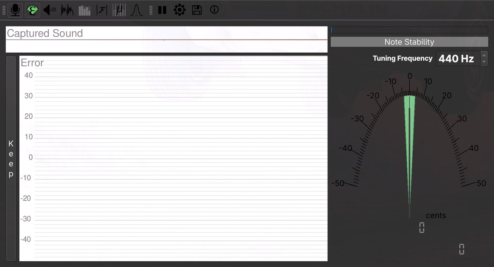
FMIT in a Hyprland tile. An empty "Error" graph takes most of the window, and the readout I actually need is squeezed into the bottom-right corner, cut off at the edge.
My review, verbatim: "insanely ugly with bad aspect ratios". And not playing nice with Hyprland.
Try 4: Chromatic, a GTK4 tuner from Flathub. One big note name, one big gauge, nothing else, which is exactly what a tuner should be. In the default tile, though, Hyprland gave it 466×508, which clipped the gauge, and Omarchy's default opacity let the desktop show through. One window rule fixed both: float it, centre it, 1100×760, fully opaque. In ~/.config/hypr/hyprland.lua:
o.window("^io\\.github\\.nate_xyz\\.Chromatic$", {
float = true, center = true, size = { 1100, 760 },
tag = "-default-opacity", opacity = "1 1" })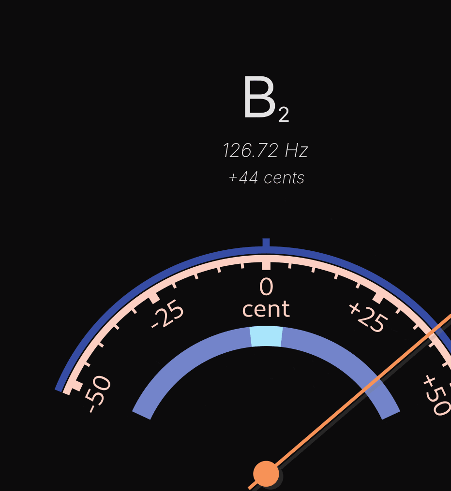
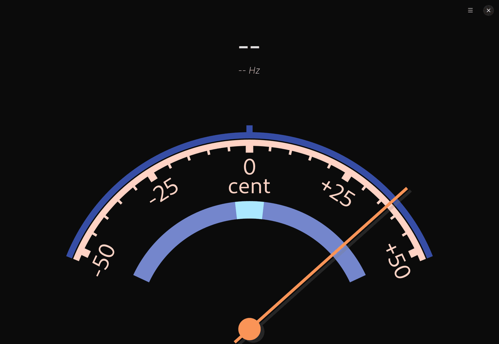
Chromatic before and after the rule. Before, in the default tile: it reads B2 at +44 cents, but the +50 end of the gauge and the needle's pivot are cut off. After: floating, centred, 1100×760 and opaque, idle ("--") and waiting for a note. That was the tuner on SW10, until try 5.
Muting took four tries too (D13). While I tune, the tuner should hear the guitar and nothing else should. A toggled Insert muted fine, then stayed silent after the second press; at the head of the heavy track it also lost its input links. wpctl set-mute can't mute a JACK node ("does not support mute"). Unpatching the guitar doesn't stick either: Qtractor re-patches its saved insert connections within seconds. What works is the Selector trick again: a latch-mode Insert at the head of the heavy track, driven by absolute CC 29 values from the helper. It sits before the Selector and the harmony tap, so all three rigs go quiet and their reverb tails ring out. Replay test: after one press, the mute is on and one tuner window is open; after the second, the mute is off and no windows are left.
Then I practised with it. Playing along, the sound kept cutting up. And the tuner seemed to be following my voice. So I typed:
oh i think it's picking up from my mic?
It was. D14: Qtractor's error count went up by about 250 in 12 seconds (6620 → 6870). Two Chromatic instances were running, one left open by an earlier toggle, using about 96% CPU between them: nearly a whole core. And both were recording Scarlett Input 1, the mic, not Input 2, the guitar. Chromatic records through ALSA-on-PipeWire and takes the default source, and the PIPEWIRE_NODE the helper passed through flatpak run didn't stick.
The fix is two rules in the helper. Kill any running instance before opening one, so there are never two. And once Chromatic's input port (ALSA plug-in [chromatic]:input_MONO) appears, replace whatever is connected to it with the guitar. Now it's one window, fed only from Input 2, closed cleanly by the second press. With the tuner closed: 1 xrun in about 15 seconds, at 0.43–0.58 B/Q. Not zero, but a different planet from 250 in 12.
My ears caught this one before any measurement did; the measurements explained it. "Close the tuner" is still the first fix for crackles in the practice guide. The rest waits on real time (D13): until I log out and back in, Qtractor's audio thread runs SCHED_OTHER.
Try 5: stop building, go shopping. Chromatic worked. It also took a Flatpak, a window rule, a port re-patcher and a kill-before-open rule to show one note name. Then, a day later:
i just realize all our tuners are dumb solutions... omarchy has existing plugins in the marketplace that are tuners like Chromatic Tuner or Fretwise or Pitchfork. Fretwise looks amazing
It does. The Omarchy shell has a plugin marketplace, and the marketplace has tuners. Fretwise (MIT, verified in the marketplace) lives in the bar. It's a dot-matrix readout of the note, the cents and the string, drawn in the active theme's colours. Its pitch detection is standard-library Python, so installing it is one omarchy plugin add. And it only listens while its panel is open, which is exactly the contract SW10 wants. A press sets Fretwise's captureSource to the guitar input (omarchy bar set) and opens its panel through the shell's IPC (omarchy-shell shell summon). The next press hides it. No window to float, no port to re-patch, nothing left running.
Chromatic stays in the code as the fallback for a desktop without Omarchy. Five tuners in, the lesson generalises: before building the thing, check what your desktop already ships. That's also where act five starts.
Act five · GuitarMood
GuitarMood: the rig as an Omarchy app
By now the rig sounded the way I wanted. Using it still meant a terminal: qtractor_rig.py up to start it, down to stop it, and in between a pedal that tells you nothing. The FCB1010 shows a bank number and one lit LED. Is the wah on? Did the boost reset when I changed song? Which bank was Fear of the Dark again? So I asked for this:
I want this whole thing to be a desktop app that shows live status of what i selected in the pedal as a hypland tile and autoscale and plays nice with omarchy. Use uv for everything. Instead of having to start and stop just add an omarchy app that i can turn on and off and it takes care of clean up on shutdown. I don't have to guess anything and show me live what each pedal does in real time, what bank I'm on, etc...
Omarchy speaks Qt
Claude's first plan was GTK4, because it was already installed. Halfway into it I asked: "omarchy seems to love Qt?" It does. Omarchy's shell is Quickshell, which is QML, and every plugin in my bar is a QML file. So GuitarMood is Qt too: PySide6 with a QML front end, packaged as a uv project, so uv run brings everything it needs and nothing touches the system Python. It reads the active theme's colors.toml every couple of seconds, so it recolours when I switch themes. And it uses the system monospace font, like everything else on the desktop.
The window is the pedalboard
The layout mirrors the FCB1010 as it sits under my feet: SW6–SW10 on the top row, SW1–SW5 on the bottom, UP and DOWN at the end of each row, EXP A and EXP B on the right. Every tile says what that switch does in the bank I'm on, down to which pedal model sits in the boost slot. Up top: the bank, the album, the era's signature song with its key, tempo and solo echo, and the scene in big letters in its own colour. The setlist of all ten banks runs down the side. UP and DOWN name the bank one tap away, because the FCB's own display only shows a number.
Any tile Hyprland hands it
Everything in the window is sized from the window, so it works at whatever size a tiling window manager comes up with. Next to btop, it keeps the whole board:
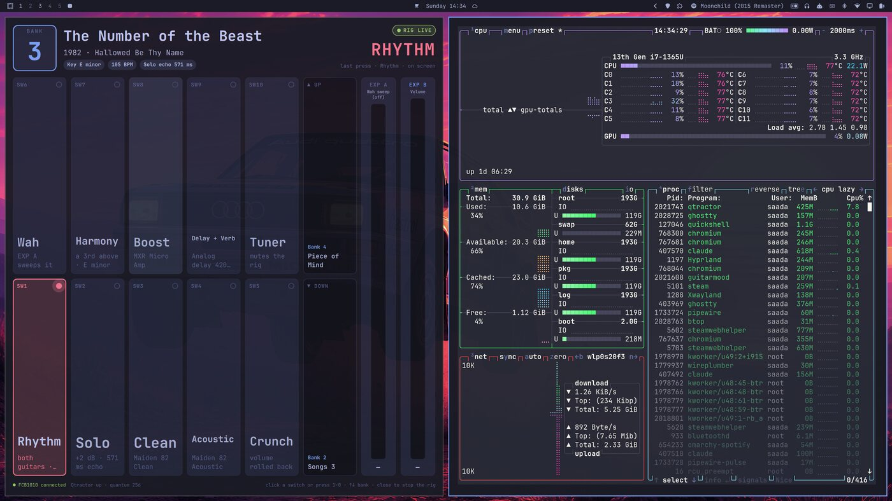
Half the screen, next to btop. In btop's process list, guitarmood sits at 0.0% CPU and 207 MB; qtractor, running all three TONE3000s, at 7.8% and 425 MB.
In a quarter of the screen it still reads from across the room, and the setlist stays:
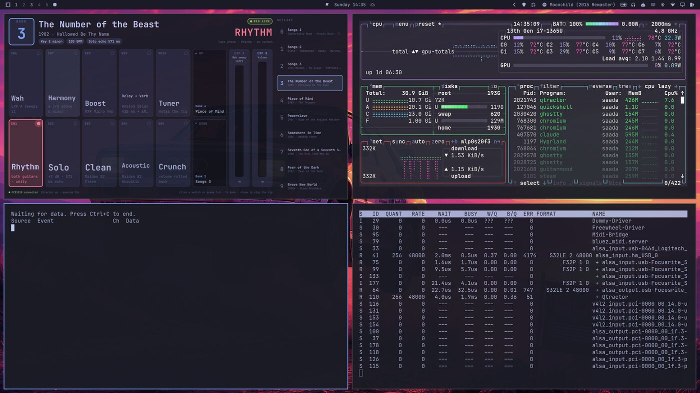
A quarter tile, sharing the screen with btop, pw-top and a raw MIDI monitor waiting for the FCB (aseqdump). pw-top shows the rig at a quantum of 256 at 48 kHz. Its ERR column is honest too: 51 on Qtractor's node. More on that under what it can't do.
And Omarchy's pop-out (SUPER+O) floats a window, pins it to every workspace and keeps it on top. Below about 700 pixels wide, GuitarMood switches to a compact layout: the bank, the scene in huge letters and the toggles as chips. It's a status light for the rig that follows me across workspaces:
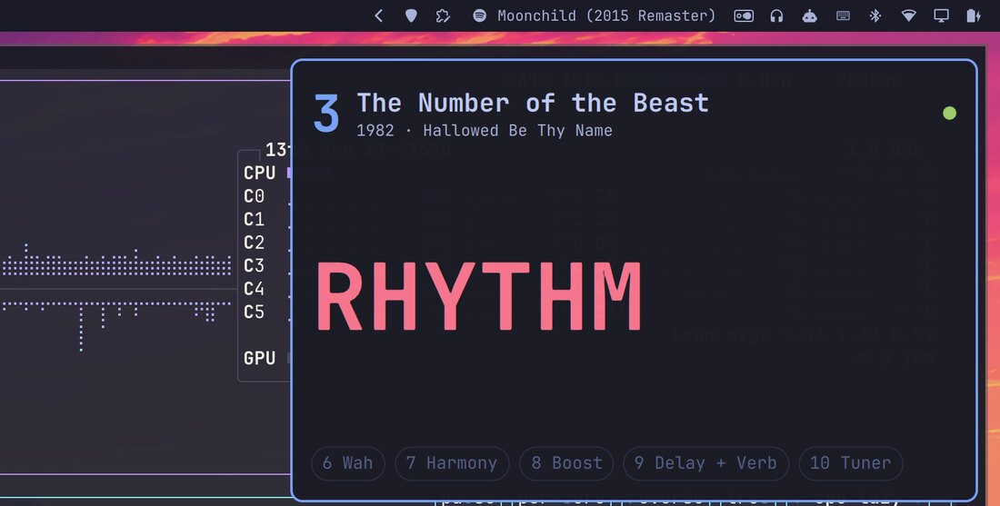
Popped out with SUPER+O at 560×360 over btop: bank 3, RHYTHM, and the five toggles, none of them on.
Never guess
Drawing tiles is the easy part. The hard part is knowing what's actually on, from a pedal that only sends fixed messages: a toggle switch sends CC 127 on every press, whether it's switching something on or off. So GuitarMood rebuilds the rig's state from the MIDI, following the rig's own rules:
- DAW toggles (wah, octaver, harmony) are Qtractor plugins. Every press flips them, and they survive a song change.
- TONE3000 toggles (boost, drive, delay, lead) flip too, but every Program Change on channel 1 reloads the preset and puts each block back to the preset's own state. GuitarMood knows each preset's defaults because it reads the same
rigs/*.jsonthe presets were built from. - The scene is decided by the CC 81 that ends every scene switch's burst (PC ch 1, PC ch 2, PC ch 3, CC 80, CC 81). Above 63 means the clean instance, playing whatever channel 2 last loaded. Otherwise CC 80 picks rhythm, solo or crunch.
- The bank is the one the last press came from. UP and DOWN send nothing, so the screen can't see you browsing banks, only choosing one.
It also took over the helper's job: the per-song echo and key, and SW10. One process reads the FCB, so the tuner light on screen is the tuner's real state. If the rig is already running when it opens, GuitarMood joins it instead of starting a second one. It stops the old helper, asks Qtractor to save (SIGUSR1), and reads the wah, harmony and tuner states back from the session. Everything only a press can tell it (the bank, the scene, the TONE3000 blocks) shows a "?" until you press something. No guessing, as ordered.
The tests replay the raw MIDI of the first real session I played on this board, 538 lines of it, and check that it ends where I ended: Seventh Son, RHYTHM, key E minor, UP pointing at Fear of the Dark. Another walks every switch in every bank and checks that the switch's own messages light it up. All ten pass.
On is open, off is close
guitarmood install puts it in the Omarchy launcher and adds two Hyprland rules. Launching goes through omarchy-launch-or-focus, so a second launch focuses the window instead of starting a second rig. Qtractor opens on a hidden special workspace, because nobody needs to look at it; SUPER+CTRL+G peeks at it. Closing the window (SUPER+W), logging out or a Ctrl-C all run the same shutdown: close the tuner, save the session, quit Qtractor. Tested end to end on the real rig. Launch: Qtractor up on special:rig, GuitarMood tiled. Close: Qtractor saved and gone, nothing left running.
One bug worth passing on. Qt 6's quit() politely asks every window to close first. GuitarMood's window refuses to close until the rig is down, so quit() quietly cancelled itself and the app hung. exit(0) doesn't ask.
Two-way, mostly
Once the screen knew everything, the obvious question: can I change things from it? Half of it, yes. Click a tile, or press 1–9 and 0 for SW1–SW10, and GuitarMood sends exactly what the FCB would send for that switch. The messages come from the same rig.build() that wrote the pedal's sysex, into the same Qtractor port. Clicking a bank in the setlist or an UP/DOWN tile, or pressing the arrow keys, loads that bank's SW1. On the real rig, Powerslave's RHYTHM, SOLO, CLEAN, WAH and HARMONY sent from the app switched Qtractor's Selector, Solo, Wah and Harmony In exactly as expected, read back from a saved session.
The other half is hardware. A stock FCB1010 can't be told anything: its display and LEDs only follow your feet. So presses from the screen are marked "on screen", and the pedal keeps showing its own bank. That's mostly harmless: toggles, SOLO and CRUNCH send the same messages in every bank. The one thing to remember is that RHYTHM, CLEAN or ACOUSTIC on the pedal load the bank the pedal shows, and the screen follows.
What it can't do (yet)
- The harmony is a diatonic third, one key per song. Sixths (The Trooper's riff), a line that changes key mid-song, or the two guitars playing different lines still need a second player.
- No real chorus, no guitar synth. TONE3000 has no modulation, so the GK's built-in chorus and Smith's CE-3 are Align wobble stand-ins, and the Roland guitar-synth layers all over Somewhere in Time are out of reach.
- Some reverbs are stand-ins. No capture exists of Battery's EMT plates (a DAW EMT 140 emulation plays them), Compass Point's Lexicon 224 or Smith's PCM 60 (a 480L and a PCM90 "pcm60 room" preset stand in), and the JCM900's own spring tank is a Valvestate's.
- Some gear is a best guess. Gers' 1990–92 head and Smith's Brave New World studio amps aren't documented, and sources disagree on Smith's Piece of Mind head. The notes in each preset say so.
- Played, but not A/B'd. Every number above comes from a DI loop or a synthetic melody through the rig. Since then I've played the Maiden scenes live from the real FCB, with every switch's MIDI checked on the way in, and my verdict was "sounds amazing". What hasn't happened is an A/B against the actual records, era by era, harmony included. That's the next Saturday.
- Xruns: diagnosed, not fixed. rtkit is out (D13), so the JACK clients only get real time once the realtime group is active in my login session. That needs a re-login I haven't done yet, and every xrun count in the Maiden chapter needs re-measuring after it. Meanwhile: close the tuner before you play (D14). The quarter-tile screenshot above shows where that stands: Qtractor's node had logged 51 errors by then, with the tuner closed.
- The pedal can't follow the screen. A stock FCB1010 has no way to be told what bank or scene the screen picked, and UP/DOWN send no MIDI, so the screen only learns a bank when you press a switch in it.
- GuitarMood is heavier than it needs to be. A 76 MB PySide6 download to draw one window, next to a shell that already runs QML all day. That's next.
- Loose ends. The clean path's extra 5.3 ms is expected, not measured. Run the standalone or the DAW, not both.
Free for anyone
This was the point from the start, and it held all the way: no Wine, no paid DAW, no subscription. Every piece of software in the rig runs natively on Linux, and every piece is open source. I checked each license rather than assume:
| Part | Its job in the rig | License |
|---|---|---|
| TONE3000 plugin 0.0.9 | amps, cabs, pedals and IRs; three instances in the DAW | MIT |
| NeuralAmpModelerCore | the neural amp models, inside the plugin | MIT |
| Qtractor 1.6.4 | the DAW, generated by a script | GPL-2.0-or-later |
| x42-plugins | the harmony's autotune stages, the true-peak limiter | GPL-2.0-or-later, GPL-3.0-or-later |
| LSP plugins | the compressor, the Solo slap delay | LGPL-3.0-or-later |
| Guitarix | wah and octaver | GPL-2.0-or-later (some parts GPL-3.0 / LGPL-3.0) |
| PipeWire | audio and JACK | MIT, LGPL-2.1-or-later |
| Hyprland · Omarchy | the desktop | BSD-3-Clause · MIT |
| Fretwise | the SW10 tuner | MIT |
| PySide6 (Qt for Python) | GuitarMood's window | LGPL-3.0 (or GPL) |
| uv | Python packaging | MIT or Apache-2.0 |
| fcb1010-biasfx2 | the preset builder, the DAW generator, the FCB layout and GuitarMood | MIT |
From the Arch packages (pacman -Qi), the projects' GitHub repositories and PyPI metadata, checked on 2026-09-27.
Two honest footnotes. The tones aren't software: they're community captures on TONE3000, free to load with a free account and shared under TONE3000's tone-sharing policy. And the hardware isn't free: a Behringer FCB1010, a Focusrite Scarlett and a guitar. Everything between the guitar cable and the speakers is.
Next: a much lighter Omarchy plugin
GuitarMood works, and it's heavier than it needs to be. PySide6 is a 76 MB download to draw one window, while the Omarchy shell already runs a QML engine all day. The tuner showed the better shape: Fretwise is a bar widget and a panel in QML, a standard-library Python process behind it, and one omarchy plugin add to install. So that's next:
- A bar widget with the bank and the scene, always visible, in the scene's colour.
- A panel with the board, the setlist and the pedals: the same layout, drawn by the shell instead of a second copy of Qt.
- A stdlib-only Python backend for the state model and the helper's job, talking to the panel over stdout, like Fretwise's pitch detector.
- A listing in the Omarchy marketplace: one
omarchy plugin add, and turning the rig on is clicking its icon in the bar.
Also on the list: the re-login that gives Qtractor real time, then every xrun number measured again, and a proper A/B of each era against the records.
Practice guide
This is the part I actually use. It's the README's practice guide, adapted: the things you do once per machine, then the things you do every time you pick up the guitar.
Once
- Install and build. The packages, the TONE3000 download and Fretwise are in Try it below.
./bootstrap.shbuilds every preset and the DAW session, anduv run --project guitarmood guitarmood installputs GuitarMood in the launcher. - Program the FCB1010. Write the layout:
uv run rig.py syx ~/Music/fcb-rig/fcb1010-maiden.syx. Put the pedal in receive mode: hold DOWN at power-on, tap UP to CONFIGURATION, then tap SW7 (SYSEX RCV). Send it:amidi -p hw:2,0 -s ~/Music/fcb-rig/fcb1010-maiden.syx(hw:2,0is my MIDI interface;amidi -llists yours). Hold DOWN to save. Then recalibrate the expression pedals: hold SW1+SW5 at power-on, then heel and toe each pedal. - Real-time audio. Add your user to the
realtimegroup (realtime-privileges) and log out and back in. Then turn rtkit off for JACK apps, because its 200 ms cap kills Qtractor (D13): copy/usr/share/pipewire/jack.confto~/.config/pipewire/and setrtportal.enabled = falseandrtkit.enabled = falsein thelibpipewire-module-rtargs. - Gain staging. Set the Scarlett's monitor knob to your loudest comfortable level. The Linux output (the sink) stays at 100%. Play Spotify or YouTube at 100%: the guitar is levelled to sit just above it. One knob, like act one said.
Every session
- Plug in the Scarlett (guitar in Input 2) and the FCB, then open GuitarMood (SUPER+SPACE). It takes about 10 seconds and starts on the Maiden 82 bank.
- Tune: press SW10. The rig mutes and Fretwise opens in the bar, listening to your guitar. Tune, then press SW10 again.
- Pick a bank with UP/DOWN (or click it in GuitarMood's setlist), and press RHYTHM, CLEAN or ACOUSTIC first: those load the era. SOLO and CRUNCH only change the drive, so they assume the era is already loaded.
- Play along with the track in Spotify or YouTube.
- Record a take:
uv run qtractor_rig.py record, thenuv run qtractor_rig.py stop. It saves the full rig and the dry DI in~/Music/fcb-rig/, so you can re-amp later. - When you're done, close GuitarMood (SUPER+W). It saves the session and stops the rig.
Maiden song recipes
| Song (bank) | How to play it on the board |
|---|---|
| Hallowed Be Thy Name (03) | CLEAN for the arpeggio intro → RHYTHM when the band comes in → SOLO for the leads. HARMONY on the twin lines (E minor). |
| The Trooper (04) | RHYTHM gallop → SOLO for the solo. HARMONY for the main riff's twin line. |
| Rime of the Ancient Mariner (05) | RHYTHM → CLEAN for the quiet middle section → back to RHYTHM → SOLO. |
| Wasted Years (06) | SOLO + SW9 (delay + reverb) for the intro lead → RHYTHM for the verses. |
| The Evil That Men Do (07) | RHYTHM, then HARMONY for the harmonised bridge. |
| Fear of the Dark (08) | CRUNCH + SW9 for the quiet intro melody (750 ms echo) → RHYTHM for the gallop → SOLO. HARMONY is set to D Dorian, but the record plays that melody in unison. |
| Journeyman (09) | ACOUSTIC for the whole song. |
From the practice guide in README.md. The record harmonises The Trooper's riff in sixths (see above), so HARMONY's third is an approximation there.
Two soloists: neck pickup for Murray's fluid legato, bridge for Smith's and Gers' bite. Wah is SW6 plus EXP A; volume swells are EXP B.
When something's off
| Symptom | Fix |
|---|---|
| No sound | The tuner mute may be on: press SW10. Otherwise check Input 2 and the Scarlett's monitor knob. |
| Wrong era or tone after changing bank | Press RHYTHM, CLEAN or ACOUSTIC to load the era. |
| Crackles or dropouts | Close the tuner (SW10). Log out and in so Qtractor gets real-time priority. Avoid heavy apps while playing. |
| Guitar too loud or quiet next to the music | Use the Scarlett monitor knob for overall level and EXP B for the guitar; leave the Linux volume at 100%. |
| The rig won't start | GuitarMood shows the error. Close it and open it again. From a terminal: uv run qtractor_rig.py down, then open GuitarMood. For details: journalctl --user -u qtractor-rig. |
| GuitarMood shows "?" | It joined a rig that was already running. Press a scene switch and it syncs. |
| Screen and pedal show different banks | You picked the bank on screen, and the FCB can't follow. Tap UP/DOWN on the pedal to the same bank. |
Try it
Everything above is on main of github.com/saada/fcb1010-biasfx2 (MIT, merged in PR #1):
- guitarmood/: the app, and the README section on how it works
- qtractor_rig.py for the DAW session, rig.py for the floorboard, tone3000.py and bootstrap.sh for the presets and a fresh machine
- rigs/RIGS.md: all 36 presets (plus the 7 generated harmony voices), their chains and sources, and a download link for every capture
- experiments/README.md: every A/B test, L1–L7, M1–M3 and D0–D14, with the raw CSVs
sudo pacman -S --needed qtractor x42-plugins-lv2 lsp-plugins-lv2 guitarix uv
# the SW10 tuner:
omarchy plugin add https://github.com/WayneKruger/omarchy-fretwise.git --enable
git clone https://github.com/saada/fcb1010-biasfx2
cd fcb1010-biasfx2
# edit AUDIO / MIDI_PORT / CALIBRATION_DBU at the top of tone3000.py for your
# gear, and turn your monitor knob all the way down first (configure puts the
# sink at unity). The TONE3000 download is at tone3000.com/plugin.
./bootstrap.sh ~/Downloads/TONE3000-*-linux-x64.tar.gz # 43 presets + DAW session
uv run rig.py send # the FCB layout, once
uv run --project guitarmood guitarmood install # launcher + Hyprland rules
# then SUPER+SPACE -> GuitarMood starts the rig; SUPER+W stops itThen SUPER+SPACE, GuitarMood, bank 07, SW1. Murray's GK 250ML on the left, Smith's 2000CPL on the right. Play the intro of The Evil That Men Do on CLEAN, stomp RHYTHM for the riff, SW7 when the bridge harmony comes around, SOLO when it's time, and watch the screen follow every stomp. On Linux. From a pedalboard that lived under my desk for years. When you're done, SUPER+W.
All of it, from the reverse-engineered preset format to GuitarMood and this write-up, I built pair-programming with Claude Code running Claude Opus 5.5. Claude wrote the code, ran the research agents and every measurement. I played, listened, and said "bro, wtf is this ugly tuner" when it was needed.
Up the Irons.